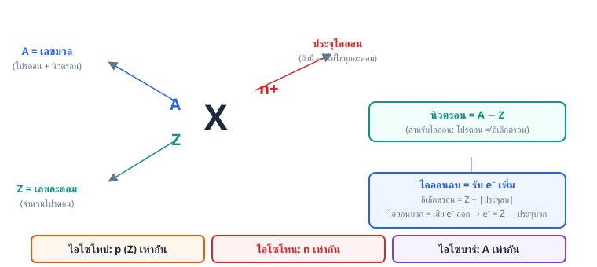
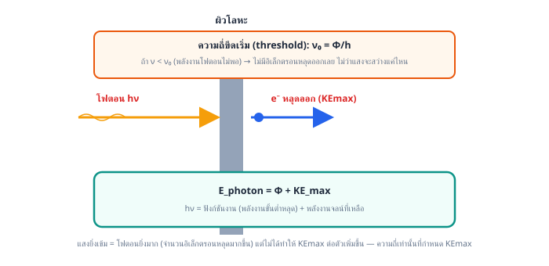
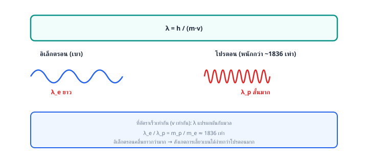
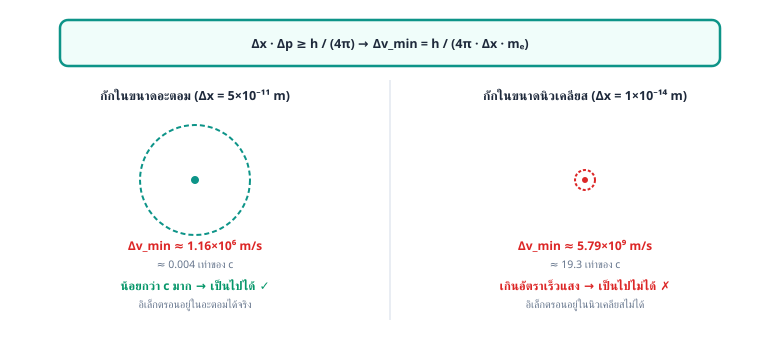
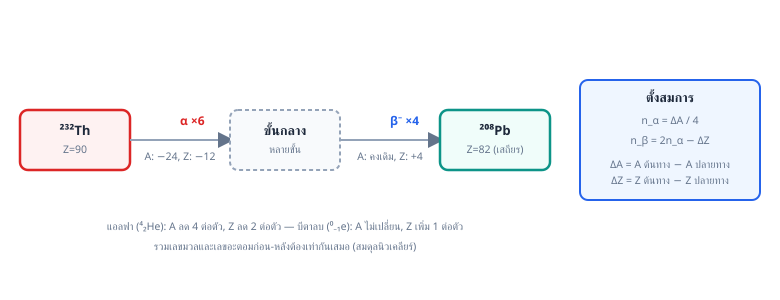
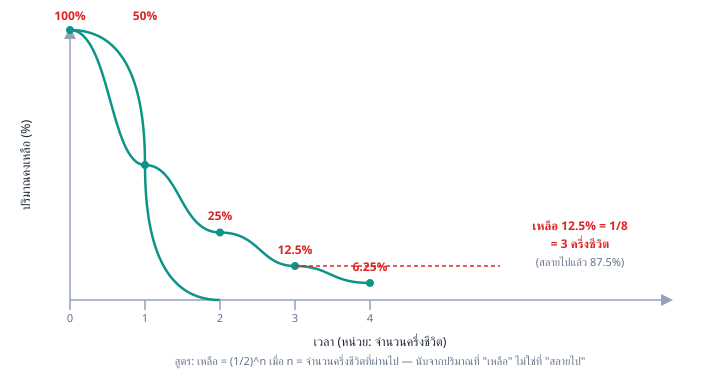
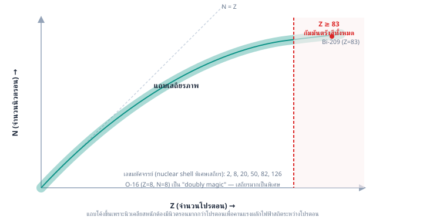
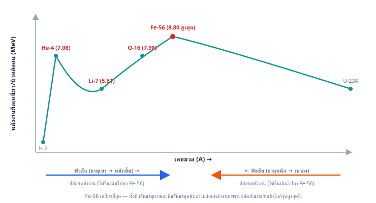

เฉลยละเอียด บทที่ 2
ข้อ 1 — ตอบ ค.
อะตอมส่วนใหญ่เป็นที่ว่าง โดยประจุบวกและมวลเกือบทั้งหมดรวมกันอยู่ในนิวเคลียสขนาดเล็กตรงกลาง
1 ขั้นที่ 1: อนุภาคแอลฟามีประจุบวกและมีมวลมาก การที่อนุภาคส่วนใหญ่ทะลุผ่านแผ่นทองคำไปเป็นเส้นตรง แสดงว่าภายในอะตอมส่วนใหญ่ต้องเป็น ที่ว่าง
2 ขั้นที่ 2: การที่อนุภาคจำนวนน้อยมากเบี่ยงเบนเป็นมุมกว้างหรือสะท้อนกลับ แสดงว่ามีบริเวณเล็ก ๆ ที่ประจุบวกและมวลอัดแน่นอยู่ จึงผลักอนุภาคแอลฟา (ประจุบวกด้วยกัน) อย่างแรงได้ รัทเทอร์ฟอร์ดเรียกบริเวณนี้ว่า นิวเคลียส
วิเคราะห์ตัวเลือกอื่น:
- "ทรงกลมตันแบ่งแยกไม่ได้" คือแบบจำลองของ ดอลตัน ซึ่งถูกล้มไปตั้งแต่ค้นพบอิเล็กตรอน
- "ประจุบวกกระจายสม่ำเสมอ มีอิเล็กตรอนฝัง" คือแบบจำลองของ ทอมสัน ซึ่งอธิบายการสะท้อนกลับของอนุภาคแอลฟาไม่ได้ เพราะประจุบวกที่กระจายเจือจางไม่มีแรงผลักมากพอ
- "วงโคจรที่มีระดับพลังงานคงตัว" คือแบบจำลองของ โบร์ ซึ่งเสนอภายหลังเพื่ออธิบายสเปกตรัมเส้น ไม่ใช่ข้อสรุปจากการทดลองนี้
ตอบ: ข้อ ค. อะตอมส่วนใหญ่เป็นที่ว่าง โดยประจุบวกและมวลเกือบทั้งหมดรวมกันอยู่ในนิวเคลียสขนาดเล็กตรงกลาง
ข้อ 2 — ตอบ ค.
รังสีแคแนลเบี่ยงเบนเข้าหาขั้วลบของสนามไฟฟ้า และค่าประจุต่อมวลเปลี่ยนไปตามชนิดของแก๊สในหลอด
หลักคิด: รังสีแคแนลเกิดจากอะตอมของแก๊สในหลอดถูกอิเล็กตรอน (รังสีแคโทด) ชนจนอิเล็กตรอนหลุดออก กลายเป็น ไอออนบวกของแก๊ส ซึ่งถูกดูดเข้าหาขั้วแคโทด (ขั้วลบ) แล้วบางส่วนทะลุผ่านรูออกไปด้านหลัง
เปรียบเทียบสมบัติ:
- ประจุ: รังสีแคแนลมีประจุบวก จึงเบี่ยงเบน เข้าหาขั้วลบ ของสนามไฟฟ้า (ตรงข้ามกับรังสีแคโทดที่มีประจุลบซึ่งเบี่ยงเข้าหาขั้วบวก)
- ค่าประจุต่อมวล (): รังสีแคแนลคือไอออนของแก๊สแต่ละชนิด มวลจึงต่างกันตามชนิดแก๊ส ค่า จึง เปลี่ยนไปตามชนิดของแก๊สในหลอด — ต่างจากรังสีแคโทดที่ได้ค่า เท่าเดิมเสมอเพราะเป็นอิเล็กตรอนเหมือนกันหมด (การทดลองกับแก๊สไฮโดรเจนให้ไอออนบวกที่เบาที่สุด ซึ่งนำไปสู่การค้นพบโปรตอน)
ที่มาของตัวลวง:
- "เบี่ยงเข้าหาขั้วบวกและ คงที่" — สลับสมบัติของรังสีแคโทดมาใส่รังสีแคแนลทั้งสองข้อ (จำสูตร e/m คงที่ของทอมสันมาใช้ผิดอนุภาค)
- "ไม่เบี่ยงเบนเพราะเป็นกลาง" — สับสนกับนิวตรอนหรือรังสีแกมมา รังสีแคแนลเป็นไอออนบวกจึงเบี่ยงเบนในสนามไฟฟ้าแน่นอน
- "อนุภาคเดียวกันแต่สวนทาง" — เข้าใจผิดจากภาพการเคลื่อนที่สวนทางกัน ความจริงเป็นคนละอนุภาค: รังสีแคโทดคืออิเล็กตรอน ส่วนรังสีแคแนลคือไอออนบวกของแก๊สซึ่งมีมวลมากกว่าหลายพันเท่า
ตอบ: ข้อ ค. รังสีแคแนลเบี่ยงเบนเข้าหาขั้วลบของสนามไฟฟ้า และค่าประจุต่อมวลเปลี่ยนไปตามชนิดของแก๊สในหลอด
ข้อ 3 — ตอบ ค.
12 ตัว
1 ขั้นที่ 1: ระบุอนุภาคจากตาราง — X มีประจุ มวลน้อยมาก คือ อิเล็กตรอน, Y ไม่มีประจุ มวลประมาณ 1 u คือ นิวตรอน, Z มีประจุ มวลประมาณ 1 u คือ โปรตอน

2 ขั้นที่ 2: อนุภาค Y (นิวตรอน) ของ หาจาก
ดังนั้นมีนิวตรอน 12 ตัว
ที่มาของตัวลวง:
- 11 ตัว — สับสนว่า Y คือโปรตอน (ดูมวลใกล้เคียงกันแต่ไม่ดูประจุ) หรืออ่านเลขอะตอมมาตอบตรง ๆ
- 23 ตัว — เอาเลขมวลมาตอบ ลืมหักเลขอะตอมออก
- 34 ตัว — บวก แทนที่จะลบ
ระวัง: มวลนิวตรอน (1.0087 u) มากกว่าโปรตอน (1.0073 u) เล็กน้อย — จุดแยกสองอนุภาคนี้ที่ชัดที่สุดคือ ประจุ ไม่ใช่มวล
ตอบ: ข้อ ค. 12 ตัว
ข้อ 4 — ตอบ ก.
จำนวนอิเล็กตรอนเท่ากัน
หลักคิด: เสียอิเล็กตรอนไป 3 ตัวจาก เหลืออิเล็กตรอน ตัว เท่ากับจำนวนอิเล็กตรอนของ Ne () พอดี จึงเป็น ไอโซอิเล็กทรอนิก (isoelectronic) กัน ส่วนโปรตอนต่างกันชัดเจน (13 กับ 10) และโจทย์ไม่ได้ให้ข้อมูลเลขมวลของ Al มาเลย จึงเทียบเลขมวล/นิวตรอนไม่ได้อยู่แล้ว
ระวัง: อย่าเข้าใจผิดว่าไอออนบวกมีจำนวนโปรตอนลดลงตามประจุ — การเกิดไอออนกระทบเฉพาะอิเล็กตรอน โปรตอนของ Al ยังคงเป็น 13 เท่าเดิมเสมอไม่ว่าจะอยู่ในรูปไอออนใด
ตอบ: ข้อ ก. จำนวนอิเล็กตรอนเท่ากัน
ข้อ 5 — ตอบ ข.
(ก) และ (ข)
ตรวจทีละข้อความ:
(ก) ถูก — เมื่อวางสนามไฟฟ้าคร่อมลำรังสีแคโทด รังสีเบี่ยงเบนเข้าหาแผ่นขั้วบวกเสมอ ประจุชนิดเดียวที่ถูกขั้วบวกดูดคือ ประจุลบ จึงสรุปได้ว่าอนุภาคในรังสี (อิเล็กตรอน) มีประจุลบ
(ข) ถูก — ทอมสันทดลองซ้ำโดยเปลี่ยนทั้งชนิดแก๊สในหลอดและโลหะที่ทำขั้วแคโทด พบว่าค่า ได้เท่าเดิมประมาณ C/g เสมอ แปลว่าอนุภาคนี้ไม่ได้ขึ้นกับชนิดของสาร จึงต้องเป็น อนุภาคพื้นฐานที่มีอยู่ในอะตอมของทุกธาตุ
(ค) ผิด — การทดลองหลอดรังสีแคโทดวัดได้เพียง อัตราส่วนประจุต่อมวล () เท่านั้น ยังแยกค่า กับ ออกจากกันไม่ได้ ค่าประจุของอิเล็กตรอน ( C) มาจาก การทดลองหยดน้ำมันของมิลลิแกน ในภายหลัง แล้วจึงนำมาคำนวณย้อนหามวลอิเล็กตรอนได้
ที่มาของตัวลวง: ผู้เรียนจำนวนมากจำสลับกันว่าทอมสันวัดประจุได้เลย ซึ่งเป็น misconception ที่ข้อสอบชอบนำมาออก — ต้องแยกให้ชัดว่า ทอมสัน = , มิลลิแกน =
ดังนั้นข้อความที่ถูกคือ (ก) และ (ข)
ตอบ: ข้อ ข. (ก) และ (ข)
ข้อ 6 — ตอบ ข.
อนุภาคแอลฟาเกือบทั้งหมดทะลุผ่านเป็นเส้นตรงหรือเบี่ยงเบนเพียงมุมเล็กน้อย ไม่มีอนุภาคใดสะท้อนกลับ
หลักคิด: ข้อนี้ถามการ ทำนายผลจากแบบจำลอง ไม่ใช่ผลการทดลองจริง — ต้องคิดว่าถ้าประจุบวกกระจายเจือจางทั่วอะตอมตามทอมสัน แรงที่กระทำต่ออนุภาคแอลฟาจะเป็นอย่างไร
1 ขั้นที่ 1: ตามแบบจำลองทอมสัน ประจุบวกทั้งหมดของอะตอมเกลี่ยกระจายในปริมาตรทั้งก้อนของอะตอม ความหนาแน่นประจุ ณ จุดใด ๆ จึงต่ำมาก ไม่มีจุดใดที่ประจุและมวลอัดแน่น
2 ขั้นที่ 2: อนุภาคแอลฟามีมวลมากและเคลื่อนที่เร็ว เมื่อวิ่งผ่านประจุบวกที่เจือจาง แรงผลักที่ได้รับ ณ แต่ละจุดจะน้อยมาก ผลรวมจึงทำให้เบี่ยงเบนได้เพียง มุมเล็กน้อย เท่านั้น — ไม่มีทางเกิดการสะท้อนกลับ เพราะไม่มีศูนย์รวมมวลและประจุที่แรงพอจะหยุดและผลักอนุภาคแอลฟากลับได้
3 ขั้นที่ 3: การที่ผลทดลองจริงพบอนุภาคส่วนน้อยสะท้อนกลับเป็นมุมกว้าง จึง ขัดแย้ง กับคำทำนายนี้ ทำให้ต้องล้มแบบจำลองทอมสันแล้วเสนอว่าประจุบวกและมวลรวมกันอยู่ในนิวเคลียสเล็ก ๆ แทน
ที่มาของตัวลวง:
- "ส่วนใหญ่สะท้อนกลับ" — เข้าใจผิดว่าประจุบวกยิ่งเต็มทั้งก้อนยิ่งผลักแรง ความจริงประจุที่กระจายเจือจางให้แรง ณ จุดใด ๆ น้อยมาก การสะท้อนกลับต้องอาศัยประจุอัดแน่นเป็นจุดเดียว
- "ถูกดูดกลืน" — ประจุบวกกับประจุบวก ผลัก กัน ไม่ดูดกัน
- "เหมือนผลทดลองจริง" — สับสนระหว่างผลทำนายของแบบจำลองทอมสันกับผลการทดลองจริง ซึ่งเป็นคนละสิ่ง ถ้าทำนายได้ตรงจริง รัทเทอร์ฟอร์ดก็ไม่จำเป็นต้องเสนอแบบจำลองใหม่
ตอบ: ข้อ ข. อนุภาคแอลฟาเกือบทั้งหมดทะลุผ่านเป็นเส้นตรงหรือเบี่ยงเบนเพียงมุมเล็กน้อย ไม่มีอนุภาคใดสะท้อนกลับ
ข้อ 7 — ตอบ ค.
C และ 5 ตัว
หลักคิดของมิลลิแกน: ประจุของหยดน้ำมันแต่ละหยดเกิดจากอิเล็กตรอนเกินจำนวน เต็มจำนวน ดังนั้นประจุทุกหยดต้องเป็น จำนวนเท่าของประจุอิเล็กตรอน ค่าประจุอิเล็กตรอนคือ ตัวหารร่วมที่มากที่สุด ของประจุทุกหยด
1 ขั้นที่ 1: หาตัวหารร่วมมากของ , , , (หน่วย C)
ทุกค่าหารด้วย ลงตัวเป็นจำนวนเต็ม (2, 3, 5, 8 ตัว) ดังนั้นประจุอิเล็กตรอน C
2 ขั้นที่ 2: หยดที่มีประจุ C มีอิเล็กตรอนเกิน
ดังนั้นหยดนี้มีอิเล็กตรอนเกินอยู่ 5 ตัว
ที่มาของตัวลวง:
- " C และ 4 ตัว" — หาค่า ถูกแต่นับผิด ( ไม่ใช่ 4)
- " C และ 2 ตัว" — มาจาก misconception ว่าประจุที่ น้อยที่สุดที่วัดได้ คือประจุอิเล็กตรอน ซึ่งผิด เพราะหยดที่เล็กที่สุดในการทดลองอาจมีอิเล็กตรอนเกินมากกว่า 1 ตัวก็ได้ (และ ไม่ใช่จำนวนเต็ม จึงขัดแย้งกันเอง)
- " C" — เป็นตัวหารร่วมจริงแต่ ไม่ใช่ตัวหารร่วมที่มากที่สุด หลักการของการทดลองให้เลือกค่ามากที่สุดที่หารประจุทุกหยดลงตัว
ตอบ: ข้อ ค. C และ 5 ตัว
ข้อ 8 — ตอบ ง.
g และ g
หลักคิด: นี่คือวิธีที่นักวิทยาศาสตร์หามวลอิเล็กตรอนจริงในประวัติศาสตร์ — ทอมสันวัดได้แค่อัตราส่วน ต่อมามิลลิแกนวัดค่า ได้โดยตรง จึงนำสองค่ามาหารกันเพื่อแยกหา
1 ขั้นที่ 1: จาก C/g จัดรูปหามวล
(ตรวจหน่วย: C หารด้วย C/g เหลือหน่วย g ถูกต้อง)
2 ขั้นที่ 2: มวลอิเล็กตรอน 1 โมล คูณด้วยเลขอาโวกาโดร
อิเล็กตรอน 1 โมลหนักเพียงประมาณ 0.00055 กรัม — เบากว่าโปรตอน 1 โมล (ประมาณ 1 กรัม) ราว 1,800 เท่า สอดคล้องกับที่รู้ว่ามวลอิเล็กตรอนน้อยมากเมื่อเทียบกับนิวเคลียส
ที่มาของตัวลวง:
- " g และ g" — มวลต่ออนุภาคถูก แต่คูณเลขอาโวกาโดรพลาดไป 1,000 เท่า (สับสนกรัมกับกิโลกรัมตอนท้าย)
- " g" — เผลอ คูณ กับ แทนที่จะหาร () ตรวจหน่วยจะเห็นว่าได้ C²/g ซึ่งไม่ใช่หน่วยมวล
- " g" — จำค่ามวลอิเล็กตรอนในหน่วย กิโลกรัม ( kg) มาตอบทั้งที่โจทย์ให้ ในหน่วย C/g จึงผิดหน่วยไป 1,000 เท่า
ตอบ: ข้อ ง. g และ g
ข้อ 9 — ตอบ ข.
ประมาณ เท่า
หลักคิด: อัตราส่วนประจุต่อมวลของอนุภาคใด ๆ คือ เมื่อประจุของโปรตอนกับอิเล็กตรอนมีขนาดเท่ากัน () อัตราส่วนของมวลจะหาได้จากการหาร ของสองอนุภาค โดยตัวประจุตัดกันพอดี
ขั้นตอน:
ดังนั้นมวลโปรตอนเป็นประมาณ เท่า (ประมาณ 1840 เท่า) ของมวลอิเล็กตรอน
ตรวจสอบเชิงเหตุผล: ค่านี้ตรงกับข้อเท็จจริงที่รู้กันว่าโปรตอนหนักกว่าอิเล็กตรอนราว 1800 เท่า และสอดคล้องกับที่รังสีแคแนลเบี่ยงเบนในสนามไฟฟ้าได้น้อยกว่ารังสีแคโทดมาก เพราะ เล็กกว่ามาก (อนุภาคหนักกว่าที่ประจุเท่ากัน)
ระวัง (ที่มาตัวลวง):
- เท่า — หารกลับด้าน () ได้อัตราส่วน แทน โจทย์ถามมวลโปรตอนเทียบอิเล็กตรอน ต้องได้ค่ามากกว่า 1 เสมอ
- เท่า — เผลอคิดว่าโปรตอนมีประจุ จึงหารผลลัพธ์ด้วย 2 โจทย์กำหนดชัดว่าประจุเท่ากัน
- เท่า — คูณ 2 ผิดทิศจากความสับสนเรื่องประจุเช่นเดียวกัน
ตอบ: ข้อ ข. ประมาณ เท่า
ข้อ 10 — ตอบ ข.
กับ
หลักคิด: คิดค่า ของแต่ละไอออน โดย = จำนวนประจุมูลฐาน และ = เลขมวล (u)
1 ขั้นที่ 1: คำนวณทีละตัว
- :
- (ดิวทีเรียม):
- (ทริเทียม):
- (อนุภาคแอลฟา):
2 ขั้นที่ 2: เทียบเป็นคู่ — คู่ที่ เท่ากันคือ กับ (ทั้งคู่ได้ ) เครื่องมือที่แยกอนุภาคด้วย เพียงอย่างเดียวจึงแยกสองไอออนนี้ออกจากกันไม่ได้ — นี่คือเหตุผลเชิงประวัติศาสตร์ที่การวัด อย่างเดียวบอกชนิดอนุภาคไม่ได้ ต้องมีข้อมูลอื่นประกอบ
ที่มาของตัวลวง:
- กับ — คิดว่าไอโซโทปของธาตุเดียวกันต้องเหมือนกันทุกอย่าง แต่มวลต่างกัน จึงต่าง ( กับ )
- กับ — เห็นเลขมวลใกล้กันแต่ไม่คิดประจุ ( กับ ไม่เท่ากัน)
- กับ — คิดว่าประจุมากขึ้นชดเชยมวลได้พอดีเสมอ แต่
ระวัง: ประจุของไอออนคิดจากจำนวนอิเล็กตรอนที่หายไป ส่วนมวลคิดจากเลขมวลทั้งก้อน — สองปริมาณนี้ไม่จำเป็นต้องแปรตามกัน
ตอบ: ข้อ ข. กับ
ข้อ 11 — ตอบ ก.
16 ตัว
หลักคิด: ในสัญลักษณ์นิวเคลียร์ เลขบน () คือเลขมวล = โปรตอน + นิวตรอน ส่วนเลขล่าง () คือเลขอะตอม = จำนวนโปรตอน
ดังนั้นจำนวนนิวตรอน
ที่มาของตัวลวง:
- 15 ตัว — ตอบจำนวนโปรตอน (เลขอะตอม) แทนนิวตรอน
- 31 ตัว — ตอบเลขมวลทั้งก้อนโดยไม่หักโปรตอนออก
- 46 ตัว — บวก แทนที่จะลบ
ตอบ: ข้อ ก. 16 ตัว
ข้อ 12 — ตอบ ก.
35, 44, 36
หลักคิด: จากสัญลักษณ์นิวเคลียร์ — เลขล่างคือโปรตอน เลขบนคือเลขมวล (โปรตอน + นิวตรอน) ส่วนประจุบอกจำนวนอิเล็กตรอนที่ต่างจากโปรตอน
1 ขั้นที่ 1: โปรตอน = เลขอะตอม
(ประจุของไอออนไม่มีผลต่อนิวเคลียส — โปรตอนคงเดิมเสมอ)
2 ขั้นที่ 2: นิวตรอน = เลขมวล − เลขอะตอม
3 ขั้นที่ 3: ไอออนลบ 1 คือการ รับอิเล็กตรอนเพิ่ม 1 ตัว
ดังนั้นได้ โปรตอน 35, นิวตรอน 44, อิเล็กตรอน 36
ที่มาของตัวลวง:
- "35, 44, 34" — คิดทิศประจุกลับ: เข้าใจว่าไอออนลบคือการเสียอิเล็กตรอน จึงลบ 1 แทนที่จะบวก 1 (จุดพลาดยอดนิยม: ประจุลบ = อิเล็กตรอนซึ่งเป็นลบ เพิ่มขึ้น)
- "35, 79, 36" — ใช้เลขมวลเป็นจำนวนนิวตรอนตรง ๆ โดยลืมหักโปรตอนออก
- "36, 43, 36" — เอาประจุไปบวกที่โปรตอนแทนอิเล็กตรอน ความจริงการเกิดไอออนเปลี่ยนเฉพาะจำนวนอิเล็กตรอน จำนวนโปรตอนในนิวเคลียสไม่มีวันเปลี่ยนจากการรับ-เสียอิเล็กตรอน
ตอบ: ข้อ ก. 35, 44, 36
ข้อ 13 — ตอบ ข.
16
1 ขั้นที่ 1: ไอออน เกิดจากอะตอม X รับอิเล็กตรอนเพิ่ม 2 ตัว ดังนั้นจำนวนโปรตอนของ X น้อยกว่าจำนวนอิเล็กตรอนของไอออนอยู่ 2
2 ขั้นที่ 2: เลขมวล = โปรตอน + นิวตรอน ดังนั้น
ธาตุ X คือกำมะถัน มีนิวตรอน 16 ตัว
จุดที่พลาดบ่อย:
- ถ้าใช้จำนวนอิเล็กตรอน 18 เป็นจำนวนโปรตอนโดยตรง จะได้ ซึ่งผิด เพราะไอออนมีอิเล็กตรอนไม่เท่าโปรตอน
- ถ้าคิดว่าไอออนลบคือการเสียอิเล็กตรอนแล้วบวกประจุเข้าไป จะได้ และ ซึ่งผิด เพราะไอออนลบคือการ รับ อิเล็กตรอน
ตอบ: ข้อ ข. 16
ข้อ 14 — ตอบ ง.
กับ
นิยาม: ไอโซโทน คือ อะตอมของธาตุต่างชนิดที่มี จำนวนนิวตรอนเท่ากัน (จำนวนนิวตรอน = เลขมวล − เลขอะตอม)
ตรวจทีละคู่:
- มีนิวตรอน ส่วน มีนิวตรอน → นิวตรอนไม่เท่ากัน แต่เลขมวลเท่ากัน จึงเป็น ไอโซบาร์
- กับ เป็นธาตุเดียวกัน (โปรตอนเท่ากัน) จึงเป็น ไอโซโทป
- กับ ก็เป็น ไอโซโทป ของไฮโดรเจนเช่นกัน
- มีนิวตรอน และ มีนิวตรอน → นิวตรอนเท่ากันและเป็นคนละธาตุ จึงเป็น ไอโซโทน ✓
วิธีจำ: ไอโซโทป = p (โปรตอน) เท่ากัน, ไอโซโทน = n (นิวตรอน) เท่ากัน, ไอโซบาร์ = เลขมวล (A) เท่ากัน
ตอบ: ข้อ ง. กับ
ข้อ 15 — ตอบ ค.
181 อนุภาค
1 ขั้นที่ 1: แยกนับอนุภาคทีละชนิดจากสัญลักษณ์นิวเคลียร์
- โปรตอน: (เลขอะตอม)
- นิวตรอน: (เลขมวลลบเลขอะตอม)
- อิเล็กตรอน: ไอออนลบ 1 รับอิเล็กตรอนเพิ่ม 1 ตัว ได้
2 ขั้นที่ 2: รวมทุกอนุภาค
ตรวจสอบเชิงเหตุผล: อะตอม I ที่เป็นกลางมีอนุภาครวม (เลขมวล + อิเล็กตรอนที่เท่าโปรตอน) เมื่อรับอิเล็กตรอนเพิ่ม 1 ตัวเป็นไอออนลบ อนุภาครวมต้องเพิ่มขึ้น 1 เป็น 181 พอดี ✓
ที่มาของตัวลวง:
- 180 อนุภาค — นับแบบอะตอมเป็นกลาง () ลืมอิเล็กตรอนที่รับเพิ่มเข้ามา 1 ตัวจากการเป็นไอออนลบ
- 127 อนุภาค — ตอบเฉพาะอนุภาคในนิวเคลียส (เลขมวล = โปรตอน + นิวตรอน) ลืมนับอิเล็กตรอนทั้งหมด
- 182 อนุภาค — คิดว่าประจุ หมายถึงรับอิเล็กตรอน 2 ตัว หรือเผลอบวกเพิ่มทั้งฝั่งอิเล็กตรอนและโปรตอน ความจริงประจุ คืออิเล็กตรอนมากกว่าโปรตอนเพียง 1 ตัวเท่านั้น
ตอบ: ข้อ ค. 181 อนุภาค
ข้อ 16 — ตอบ ง.
1 ขั้นที่ 1: เกิดจากอะตอม X เสียอิเล็กตรอน 3 ตัว เมื่อไอออนมีอิเล็กตรอน 10 ตัว อะตอม X เดิมจึงมีอิเล็กตรอน (= โปรตอน)
2 ขั้นที่ 2: โจทย์บอกนิวตรอนมากกว่าโปรตอน 1 ตัว
3 ขั้นที่ 3: เลขมวล ได้สัญลักษณ์ (ธาตุนี้คืออะลูมิเนียม)
ที่มาของตัวลวง:
- — ใช้จำนวนอิเล็กตรอนของไอออน (10) เป็นจำนวนโปรตอนโดยตรง ลืมว่าไอออนบวก 3 คือการเสียอิเล็กตรอนไป 3 ตัว
- — ได้โปรตอนถูก แต่ใช้ (ลืมเงื่อนไขนิวตรอนมากกว่า 1 ตัว)
- — คิดสลับทิศเป็น แล้วเอา 3 ไปเป็นส่วนต่างนิวตรอน () ซึ่งสลับบทบาทของเลข 3 กับเลข 1 ในโจทย์
ตอบ: ข้อ ง.
ข้อ 17 — ตอบ ง.
44
1 ขั้นที่ 1: หาโปรตอนของ X — ไอออน เกิดจากอะตอม X เสียอิเล็กตรอน 2 ตัว เมื่อไอออนเหลืออิเล็กตรอน 18 ตัว อะตอมเดิมมีอิเล็กตรอน (= โปรตอน)
(X คือแคลเซียม)
2 ขั้นที่ 2: หานิวตรอนของ
3 ขั้นที่ 3: ไอโซโทนกันหมายถึงจำนวน นิวตรอน เท่ากัน ดังนั้น และเลขมวลของ X คือ
นิวไคลด์นี้คือ
ตรวจสอบเชิงเหตุผล: มีนิวตรอน เท่ากับ ที่มี 24 จริง และเป็นคนละธาตุกัน จึงเป็นไอโซโทนกันถูกต้อง ✓
ที่มาของตัวลวง:
- 42 — ใช้จำนวนอิเล็กตรอนของไอออน (18) เป็นจำนวนโปรตอนโดยตรง ได้ ลืมบวกอิเล็กตรอน 2 ตัวที่ไอออนบวกเสียไปคืนก่อน
- 38 — คิดทิศประจุกลับเป็น แล้วเผลอใช้ตัวเลขอื่นปน หรือหลงคิดว่าไอออนบวกคือการรับอิเล็กตรอน
- 45 — สับสน ไอโซโทน กับ ไอโซบาร์ จึงให้เลขมวลของ X เท่ากับของ Sc ทั้งที่สิ่งที่เท่ากันคือจำนวนนิวตรอน ไม่ใช่เลขมวล
ตอบ: ข้อ ง. 44
ข้อ 18 — ตอบ ค.
38
หลักคิด: ไล่ทีละขั้น (1) นิวตรอนของ คือ 20 ตัวตามที่โจทย์กำหนดตรงๆ เพราะการเกิดไอออนกระทบเฉพาะอิเล็กตรอน ไม่กระทบนิวตรอน (สังเกตเสริม: ถ้าคิดเลขมวลจาก จะพบว่าเป็นไอโซโทป K-39 ที่พบมากในธรรมชาติพอดี — สอดคล้องกับบริบท) (2) หาอิเล็กตรอนของ : เสียอิเล็กตรอนไป 1 ตัวจาก เหลือ ตัว (3) มีอิเล็กตรอนเท่ากับ คือ 18 ตัว ตรวจสอบกับ : รับอิเล็กตรอนมา 1 ตัว ✓ สอดคล้องกัน (4) หานิวตรอนของ จากไอโซโทปที่พบมากสุด (เลขมวล 35): (5) รวมนิวตรอนทั้งสองไอออน:
ระวัง: การเกิดไอออนกระทบเฉพาะจำนวนอิเล็กตรอน ไม่กระทบโปรตอนหรือนิวตรอนเด็ดขาด ตัวลวง 39 มาจากการอ่านโจทย์ผิด — เผลอตอบเลขมวลของ () ไปเลยเพราะบังเอิญคำนวณเจอระหว่างทาง โดยลืมไปว่าโจทย์ถามผลรวมนิวตรอนของทั้งสองไอออน ไม่ใช่เลขมวลของไอออนเดียว ส่วนตัวลวง 36-37 มาจากการเผลอเอาประจุไอออนไปบวก/ลบกับจำนวนนิวตรอนโดยตรง ทั้งที่ประจุไอออนไม่เกี่ยวกับนิวตรอนเลย
ตอบ: ข้อ ค. 38
ข้อ 19 — ตอบ ก.
หลักคิด: จำนวนอิเล็กตรอนของไอออน = เลขอะตอม − ประจุ (ไอออนบวกเสียอิเล็กตรอน จึงลบ ส่วนไอออนลบรับอิเล็กตรอน จึงบวก)
ตรวจข้อแรก:
ทุกตัวมี 10 อิเล็กตรอนเท่ากัน (โครงแบบเดียวกับ Ne คือ ) → ถูกต้อง ✓
ข้ออื่นมีตัวแปลกปลอม:
- ข้อสอง: , , แต่ → ไม่เท่ากัน
- ข้อสาม: , แต่ , → ไม่เท่ากัน
- ข้อสี่: , , แต่ → ไม่เท่ากัน
ระวัง: อย่าดูแค่ประจุหรือแค่ความใกล้กันในตารางธาตุ ต้องคำนวณจำนวนอิเล็กตรอนจริงทีละตัว
ตอบ: ข้อ ก.
ข้อ 20 — ตอบ ค.
378
หลักคิด: จำนวนอิเล็กตรอนของไอออนต้องแปลงกลับเป็นเลขอะตอม (จำนวนโปรตอน) ก่อนเสมอ: ไอออนบวกเสียอิเล็กตรอน จึงต้อง บวกประจุกลับ ส่วนไอออนลบรับอิเล็กตรอน จึงต้อง ลบประจุออก
ขั้นตอน:
- มี 28 อิเล็กตรอน แสดงว่าอะตอม A มีโปรตอน (คือแกลเลียม Ga) นิวตรอน เลขมวลของ A (Ga-69 เป็นไอโซโทปหลักในธรรมชาติจริง)
- มีอิเล็กตรอนเท่ากับ Kr คือ 36 ตัว แสดงว่าอะตอม B มีโปรตอน (คือซีลีเนียม Se) นิวตรอน เลขมวลของ B (Se-80 เป็นไอโซโทปที่พบมากที่สุดของ Se)
- ตรวจประจุของสูตร: สอดคล้องกับ จริง (คือ )
- ผลรวมเลขมวล
ตรวจสอบเชิงเหตุผล: Ga อยู่หมู่ IIIA จึงเกิด และ Se อยู่หมู่ VIA จึงเกิด ได้จริง ทั้ง Ga-69 และ Se-80 เป็นไอโซโทปธรรมชาติจริง ตัวเลขทุกขั้นสอดคล้องกัน
ระวัง (ที่มาตัวลวง):
- 372 — ใช้จำนวนอิเล็กตรอนของไอออนเป็นเลขอะตอมตรง ๆ โดยไม่ปรับประจุ (ได้ , และ , รวม ) นี่คือกับดักหลักของข้อนี้
- 354 — ลืมเงื่อนไข "มากกว่านิวไคลด์ของ A อยู่ 8" แล้วใช้นิวตรอนของ B เท่ากับ 38 เท่า A (ได้ รวม )
- 390 — ปรับประจุกลับผิดทิศเฉพาะไอออนลบ (คิดว่า B รับอิเล็กตรอนแล้วเลขอะตอมเพิ่ม: ทำให้ รวม )
ตอบ: ข้อ ค. 378
ข้อ 21 — ตอบ ค.
37
1 ขั้นที่ 1: หาโปรตอนของ X — ไอออน เสียอิเล็กตรอน 2 ตัว เหลือ 18 ดังนั้น
(X คือแคลเซียม)
2 ขั้นที่ 2: หานิวตรอนของ X จากเลขมวล 40
3 ขั้นที่ 3: หาโปรตอนของ Y — ไอออน รับอิเล็กตรอนเพิ่ม 1 ตัวเป็น 18 ดังนั้น
(Y คือคลอรีน)
4 ขั้นที่ 4: ไอโซโทนกันแปลว่านิวตรอนเท่ากัน ดังนั้น
ที่มาของตัวลวง:
- 35 — คิด (ลืมว่าไอออนลบต้องหักอิเล็กตรอนที่รับเข้ามาออก) ร่วมกับ หรือมาจากการจำว่า Cl มีเลขมวล 35 เสมอโดยไม่ใช้เงื่อนไขไอโซโทน
- 38 — ใช้ กับ (พลาดที่ขั้นหาโปรตอนของ Y ขั้นเดียว)
- 40 — สับสนไอโซโทนกับไอโซบาร์ จึงให้เลขมวลของ Y เท่ากับของ X
ระวัง: ทิศของประจุกับอิเล็กตรอนสลับกัน — ไอออนบวก "บวกกลับ" ตอนหาโปรตอน ส่วนไอออนลบ "ลบออก"
ตอบ: ข้อ ค. 37
ข้อ 22 — ตอบ ค.
10.8 u
หลักคิด: มวลอะตอมเฉลี่ย = ผลรวมของ (มวลไอโซโทป × สัดส่วนร้อยละ)

สังเกตว่าค่าเฉลี่ยเอียงเข้าหา 11.0 เพราะ มีสัดส่วนมากกว่า
ที่มาของตัวลวง:
- 10.5 u — เอามวลสองไอโซโทปมาเฉลี่ยตรง ๆ โดยไม่ถ่วงน้ำหนักด้วยร้อยละความอุดมสมบูรณ์
- 10.2 u — สลับร้อยละของสองไอโซโทป ()
- 21.0 u — บวกมวลสองไอโซโทปโดยไม่หารสัดส่วนเลย
ตอบ: ข้อ ค. 10.8 u
ข้อ 23 — ตอบ ข.
ร้อยละ 94
1 ขั้นที่ 1: ตั้งตัวแปร — ให้ มีสัดส่วน ดังนั้น มีสัดส่วน (สองไอโซโทปรวมกันต้องได้ 100%)
2 ขั้นที่ 2: ตั้งสมการมวลอะตอมเฉลี่ย
3 ขั้นที่ 3: แก้สมการ
ดังนั้น มีความอุดมสมบูรณ์ ร้อยละ 94
ตรวจย้อน: ✓
สังเกตเชิงเหตุผล: มวลเฉลี่ย 6.94 อยู่ใกล้ 7.00 มาก แสดงว่า ต้องมีสัดส่วนสูงมาก — ใช้เช็กคำตอบได้ทันทีโดยไม่ต้องคำนวณละเอียด
ที่มาของตัวลวง:
- ร้อยละ 6 — แก้สมการถูกแต่ตอบสลับตัว (นี่คือร้อยละของ ) ต้องอ่านโจทย์ให้ชัดว่าถามไอโซโทปตัวไหน
- ร้อยละ 50 — เข้าใจว่ามวลเฉลี่ยอยู่ระหว่างมวลสองไอโซโทปแปลว่ามีปริมาณเท่ากัน ซึ่งขัดกับการที่ 6.94 เอียงเข้าหา 7.00 อย่างชัดเจน
- ร้อยละ 69.4 — จับตัวเลขมวลเฉลี่ย 6.94 มาแปลงเป็นร้อยละตรง ๆ โดยไม่ได้ตั้งสมการ
ตอบ: ข้อ ข. ร้อยละ 94
ข้อ 24 — ตอบ ข.
35.5 u
1 ขั้นที่ 1: หาร้อยละของอีกไอโซโทปก่อน — เมื่อ มีร้อยละ 75.0 ที่เหลือคือ ร้อยละ
2 ขั้นที่ 2: คิดค่าเฉลี่ยถ่วงน้ำหนัก
ค่านี้ตรงกับมวลอะตอมของ Cl ในตารางที่ใช้กันคือ 35.5
ที่มาของตัวลวง:
- 36.0 u — เฉลี่ยตรง ๆ เหมือนสองไอโซโทปมีปริมาณเท่ากัน
- 36.5 u — สลับร้อยละ ()
- 35.2 u — เข้าใจผิดว่าค่าเฉลี่ยต้องใกล้ 35 มากกว่านี้มาก (เดาจากความรู้สึกโดยไม่คำนวณ หรือคูณสัดส่วนพลาด)
ตอบ: ข้อ ข. 35.5 u
ข้อ 25 — ตอบ ก.
28.11 u
หลักคิด: มวลอะตอมเฉลี่ยคือค่าเฉลี่ย ถ่วงน้ำหนัก ด้วยร้อยละความอุดมสมบูรณ์ของทุกไอโซโทป — มี 3 ชนิดก็รวมทั้ง 3 พจน์
1 ขั้นที่ 1: คูณมวลแต่ละไอโซโทปกับร้อยละของมัน
2 ขั้นที่ 2: คำนวณทีละพจน์
ตรวจสอบเชิงเหตุผล: มีมากถึงร้อยละ 92 ค่าเฉลี่ยจึงต้องอยู่ใกล้ 28.0 มาก — ค่า 28.11 สมเหตุสมผล (และตรงกับมวลอะตอม Si = 28 ในตารางที่ใช้กัน) ส่วนคำตอบที่ห่างจาก 28 มากควรตัดทิ้งได้ทันที
ที่มาของตัวลวง:
- 29.00 u — เฉลี่ยตรง ๆ เหมือนทุกไอโซโทปมีปริมาณเท่ากัน ไม่ได้ถ่วงน้ำหนักด้วยร้อยละ
- 29.89 u — สลับร้อยละของไอโซโทปเบาสุดกับหนักสุด () สังเกตว่าค่าออกมาเอียงไปทาง 30 ซึ่งขัดกับการที่ มีมากที่สุด
- 28.00 u — ตอบมวลของไอโซโทปที่มีมากที่สุดโดยไม่คิดค่าเฉลี่ย มวลอะตอมเฉลี่ยต้องรวมผลของไอโซโทปส่วนน้อยด้วย จึงมากกว่า 28.0 เล็กน้อย
ตอบ: ข้อ ก. 28.11 u
ข้อ 26 — ตอบ ก.
ร้อยละ 60.3
1 ขั้นที่ 1: ตั้งตัวแปร — ให้ มีสัดส่วน ดังนั้น มีสัดส่วน (สองไอโซโทปต้องรวมกันได้ 100%)
2 ขั้นที่ 2: ตั้งสมการค่าเฉลี่ยถ่วงน้ำหนัก
3 ขั้นที่ 3: แก้สมการ
ดังนั้น มีความอุดมสมบูรณ์ประมาณ ร้อยละ 60.3 (ตรวจย้อน: ✓)
ที่มาของตัวลวง:
- ร้อยละ 39.7 — แก้สมการถูกแต่ตอบสลับตัว (นี่คือร้อยละของ ) — โจทย์แบบนี้ต้องอ่านให้ชัดว่าถามไอโซโทปตัวไหน
- ร้อยละ 50.0 — เดาจากการที่ 69.72 อยู่ "ระหว่าง" มวลสองไอโซโทปโดยไม่สังเกตว่าค่าเฉลี่ยเอียงเข้าหา 68.93 มากกว่า
- ร้อยละ 69.7 — เอาตัวเลขมวลอะตอมเฉลี่ยมาตอบเป็นร้อยละ (จับตัวเลขในโจทย์มาปนกัน)
ตอบ: ข้อ ก. ร้อยละ 60.3
ข้อ 27 — ตอบ ค.
ร้อยละ 56.25
1 ขั้นที่ 1: ระบุว่าโมเลกุลมวล 70 เกิดจากไอโซโทปคู่ใด — มวล 70 = 35 + 35 ดังนั้นต้องเป็นโมเลกุลที่อะตอม ทั้งสองตัว เป็น (คู่ผสม และคู่หนัก )
2 ขั้นที่ 2: การจับคู่เป็นแบบสุ่มและอิสระต่อกัน ความน่าจะเป็นที่อะตอมตัวหนึ่งเป็น คือ 0.75 ดังนั้นความน่าจะเป็นที่ทั้งสองตัวเป็น คือ
ได้ ร้อยละ 56.25
ตรวจสอบเชิงเหตุผล: โมเลกุลทั้งสามชนิดต้องรวมกันได้ 100%
- มวล 70 (–):
- มวล 72 (– สลับตำแหน่งได้ 2 แบบ):
- มวล 74 (–):
รวม ✓ (ค่าเฉลี่ยมวลโมเลกุลก็สอดคล้อง: u)
ที่มาของตัวลวง:
- ร้อยละ 75 — ใช้ร้อยละของไอโซโทป ตอบตรง ๆ ลืมว่าโมเลกุลต้องอาศัยอะตอม 2 ตัวพร้อมกัน ความน่าจะเป็นจึงต้องคูณกัน
- ร้อยละ 37.5 — คำนวณของโมเลกุลมวล 72 () แล้วตอบผิดชนิด หรือเผลอคูณ 2 เข้าไปทั้งที่คู่ – เหมือนกันทั้งสองตำแหน่ง ไม่มีการสลับให้นับซ้ำ
- ร้อยละ 6.25 — คูณความน่าจะเป็นผิดตัวเป็น ซึ่งเป็นสัดส่วนของโมเลกุลมวล 74
ตอบ: ข้อ ค. ร้อยละ 56.25
ข้อ 28 — ตอบ ง.
107.96 u
หลักคิด: โจทย์ให้ อัตราส่วนจำนวนอะตอม ไม่ใช่ร้อยละ — แปลงเป็นสัดส่วนก่อนโดยใช้ผลรวมของอัตราส่วนเป็นตัวหาร
1 ขั้นที่ 1: ผลรวมอัตราส่วน ดังนั้นสัดส่วนของ และ
2 ขั้นที่ 2: คิดค่าเฉลี่ยถ่วงน้ำหนัก
สอดคล้องกับมวลอะตอมของ Ag ในตาราง (108) และค่าเฉลี่ยเอียงเข้าหา 107 เล็กน้อยเพราะ มีจำนวนอะตอมมากกว่า
ที่มาของตัวลวง:
- 108.00 u — เฉลี่ยตรง ๆ โดยไม่ถ่วงน้ำหนักตามอัตราส่วน
- 108.04 u — สลับอัตราส่วนของสองไอโซโทป ( หาร 25) — สังเกตว่าค่านี้เกิน 108 ซึ่งขัดกับการที่ไอโซโทปเบามีมากกว่า ใช้ตรวจคำตอบตัวเองได้
- 107.52 u — ใช้ 13 กับ 12 เป็นร้อยละโดยตรง (หารด้วย 100 แทนที่จะหารด้วย 25) แล้วเกลี่ยส่วนที่เหลือผิด
ตอบ: ข้อ ง. 107.96 u
ข้อ 29 — ตอบ ก.
1 : 3
หลักคิด: มวลอะตอมเฉลี่ยของของผสมคือค่าเฉลี่ยถ่วงน้ำหนักด้วย สัดส่วนจำนวนอะตอม ของแต่ละแหล่ง โดยโบรอนธรรมชาติทั้งก้อนคิดเป็นมวลเฉลี่ย 10.8 u ต่ออะตอม และ บริสุทธิ์คิดเป็น 10.0 u ต่ออะตอม
ขั้นตอน:
- ให้สัดส่วนอะตอมจากโบรอนธรรมชาติเป็น และจาก บริสุทธิ์เป็น :
- แก้สมการ:
- อัตราส่วนธรรมชาติ : บริสุทธิ์
ตรวจสอบเชิงเหตุผล (คำนวณย้อนกลับ): โบรอนธรรมชาติ 10.8 u มี อยู่ร้อยละ 20 (จาก ) ถ้าผสม 1 : 3 สมมติมีอะตอมรวม 100 ตัว มาจากธรรมชาติ 25 ตัว (เป็น 5 ตัว, 20 ตัว) และ บริสุทธิ์ 75 ตัว รวมมี 80 ตัวจาก 100 มวลเฉลี่ย u ตรงพอดี
ระวัง (ที่มาตัวลวง):
- 3 : 1 — สลับข้างอัตราส่วน (เอาสัดส่วนของ บริสุทธิ์ขึ้นก่อน) ลองสามัญสำนึก: ต้องการมวลเฉลี่ย 10.2 ซึ่งใกล้ 10.0 มาก แสดงว่าต้องใส่ บริสุทธิ์เป็นส่วนใหญ่ ธรรมชาติจึงต้องเป็นฝ่ายน้อย
- 1 : 4 — ไปคำนวณสัดส่วนไอโซโทป : ในของผสมสุดท้าย () แทนที่จะเป็นอัตราส่วนของสองแหล่งที่นำมาผสม
- 3 : 4 — ใช้กฎคานผิด: หารช่วงห่างด้วยช่วงเต็มแทนช่วงฝั่งตรงข้าม () — ตัวส่วนของกฎคานต้องเป็นระยะห่างจากอีกฝั่ง ไม่ใช่ความกว้างทั้งช่วง
ตอบ: ข้อ ก. 1 : 3
ข้อ 30 — ตอบ ข.
ร้อยละ 10.0
หลักคิด: มี 3 ไอโซโทปแต่รู้ร้อยละแล้ว 1 ตัว จึงเหลือตัวแปร 2 ตัวที่ผูกกันด้วยเงื่อนไข "รวมกันได้ 100%" — ตั้งระบบสมการ 2 สมการ
1 ขั้นที่ 1: ให้ มีสัดส่วน ดังนั้น มีสัดส่วน
2 ขั้นที่ 2: ตั้งสมการมวลอะตอมเฉลี่ย
3 ขั้นที่ 3: กระจายและรวมพจน์
4 ขั้นที่ 4: ดังนั้น มีร้อยละ 11.0 และ มีร้อยละ
ตรวจย้อน: ✓
ที่มาของตัวลวง:
- ร้อยละ 11.0 — แก้ระบบสมการถูกทุกขั้น แต่ตอบค่าของ แทน ที่โจทย์ถาม
- ร้อยละ 21.0 — หยุดที่ แล้วคิดว่าทั้งหมดเป็น โดยลืมว่ามี แบ่งส่วนนี้อยู่ด้วย
- ร้อยละ 5.0 — เดาว่า กับ ต้องมีปริมาณใกล้กันหรือหาร 21 แบบคาดคะเน ซึ่งไม่สอดคล้องกับสมการมวลเฉลี่ย
ตอบ: ข้อ ข. ร้อยละ 10.0
ข้อ 31 — ตอบ ก.
หลักคิด: อนุกรมสเปกตรัมของไฮโดรเจนจำแนกตามระดับพลังงาน ปลายทาง ที่อิเล็กตรอนตกลงไปสิ้นสุด
- อนุกรมไลมัน ตกสู่ → ช่วงรังสีอัลตราไวโอเลต
- อนุกรมบัลเมอร์ ตกสู่ → ช่วงแสงที่มองเห็นได้ ✓
- อนุกรมพาสเชน ตกสู่ → ช่วงรังสีอินฟราเรด
ที่มาของตัวลวง:
- — สับสนกับอนุกรมไลมัน ซึ่งอยู่ในช่วง UV เพราะช่องพลังงานลงสู่สถานะพื้นกว้างมาก
- — สับสนกับอนุกรมพาสเชน (อินฟราเรด)
- — เข้าใจกลับทาง: คือจุดที่อิเล็กตรอนหลุดจากอะตอม (จุดตั้งต้นที่สูงที่สุด) ไม่ใช่ปลายทางของการตก
ตอบ: ข้อ ก.
ข้อ 32 — ตอบ ค.
โฟตอนแสงสีม่วงมีพลังงานเป็น 1.5 เท่าของโฟตอนแสงสีส้ม
หลักคิด: พลังงานโฟตอน ดังนั้นพลังงาน แปรผกผัน กับความยาวคลื่น — คลื่นยิ่งสั้น พลังงานยิ่งสูง
1 ขั้นที่ 1: เทียบอัตราส่วนพลังงาน (ค่า กับ ตัดกันหมด)
ดังนั้นโฟตอนแสงสีม่วง (คลื่นสั้นกว่า) มีพลังงานเป็น 1.5 เท่า ของโฟตอนแสงสีส้ม
ตรวจสอบ: คำนวณตรง ๆ ด้วย J s, m/s ได้ J และ J อัตราส่วน ✓
ที่มาของตัวลวง:
- "สีส้มมีพลังงานเป็น 1.5 เท่า" — คิดกลับทิศว่าความยาวคลื่นมากแปลว่าพลังงานมาก (สับสนระหว่าง กับ )
- "พลังงานเท่ากันเพราะอัตราเร็วเท่ากัน" — จริงที่แสงทุกสีเคลื่อนที่ด้วยอัตราเร็ว เท่ากันในสุญญากาศ แต่พลังงานขึ้นกับ ความถี่ ไม่ใช่อัตราเร็ว
- "2.25 เท่า" — เอาอัตราส่วน 1.5 ไปยกกำลังสอง () เพราะจำสับสนกับสูตรที่มีกำลังสอง ซึ่งสูตรพลังงานโฟตอนไม่มี
ตอบ: ข้อ ค. โฟตอนแสงสีม่วงมีพลังงานเป็น 1.5 เท่าของโฟตอนแสงสีส้ม
ข้อ 33 — ตอบ ค.
1 ขั้นที่ 1: แทน ในสูตร โดยต้องยกกำลังสองก่อน
2 ขั้นที่ 2: คำนวณ
ที่มาของตัวลวง:
- J — หารด้วย ตรง ๆ โดยลืมยกกำลังสอง
- J — ขนาดถูกแต่ทิ้งเครื่องหมายลบ พลังงานของอิเล็กตรอนที่ถูกยึดอยู่ในอะตอมต้องเป็น ค่าลบ เสมอ (ค่าศูนย์คือตอนหลุดพ้นจากอะตอมที่ )
- J — เผลอคูณ แทนที่จะหาร
ระวัง: ยิ่ง มาก พลังงานยิ่ง สูงขึ้น (ลบน้อยลงเข้าใกล้ศูนย์) — อย่าตีความว่าตัวเลขขนาดใหญ่แปลว่าพลังงานสูง
ตอบ: ข้อ ค.
ข้อ 34 — ตอบ ก.
จำนวนอิเล็กตรอนที่หลุดออกมามากขึ้น แต่พลังงานจลน์สูงสุดต่อตัวเท่าเดิม
หลักคิด: ขึ้นกับความถี่ เท่านั้น ไม่มีตัวแปรความสว่างอยู่ในสูตรเลย ส่วนความสว่างคือจำนวนโฟตอนต่อวินาที เพิ่มความสว่างจึงเพิ่มจำนวนโฟตอนที่ตกกระทบ ซึ่งแต่ละโฟตอนเตะอิเล็กตรอนได้ 1 ตัว จำนวนอิเล็กตรอนที่หลุดจึงเพิ่มขึ้นตาม แต่พลังงานต่อโฟตอน (และพลังงานจลน์ต่ออิเล็กตรอน 1 ตัว) ไม่เปลี่ยน

ตรวจสอบเชิงเหตุผล: นี่คือหลักฐานสำคัญที่ทฤษฎีคลื่นแบบเดิมอธิบายไม่ได้ (ทฤษฎีคลื่นทำนายว่าความสว่างมากขึ้นควรทำให้พลังงานต่ออิเล็กตรอนมากขึ้นด้วย) แต่ผลการทดลองจริงยืนยันว่าพลังงานต่อตัวคงที่ ต้องอาศัยแนวคิดโฟตอนของไอน์สไตน์อธิบาย
ระวัง (ที่มาตัวลวง):
- ข้อ 2, 3 ผิด — สับสนว่าความสว่างส่งผลต่อพลังงานต่อตัว ทั้งที่จริงมีผลต่อจำนวนอิเล็กตรอนเท่านั้น
- ข้อ 4 ผิด — ความสว่างที่เพิ่มขึ้นทำให้จำนวนโฟตอนต่อวินาทีมากขึ้น จึงมีอิเล็กตรอนหลุดมากขึ้นจริง
ตอบ: ข้อ ก. จำนวนอิเล็กตรอนที่หลุดออกมามากขึ้น แต่พลังงานจลน์สูงสุดต่อตัวเท่าเดิม
ข้อ 35 — ตอบ ก.
อิเล็กตรอน เพราะมีมวลน้อยที่สุด ทำให้ λ มากที่สุด
หลักคิด: จากสูตร เมื่อ ใกล้เคียงกัน จะแปรผกผันกับมวล — ยิ่งมวลน้อย ยิ่งได้ มาก

ตรวจสอบเชิงเหตุผล: อิเล็กตรอนมีมวลน้อยที่สุดในบรรดาตัวเลือกทั้งหมด (เบากว่าโปรตอน/อะตอมฮีเลียมมาก และเบากว่าลูกกอล์ฟมหาศาล) จึงมี มากที่สุด นี่คือเหตุผลที่สมบัติคลื่นของสสารสังเกตเห็นได้ชัดเฉพาะกับอนุภาคเบาอย่างอิเล็กตรอนเท่านั้น
ระวัง (ที่มาตัวลวง):
- ประจุไฟฟ้า (ข้อ 2) ไม่ปรากฏในสูตรเดอบรอยล์เลย ไม่เกี่ยวข้องกับขนาดของ
- ความเสถียรทางเคมี (ข้อ 3) เป็นสมบัติคนละเรื่องกับมวลหรือความยาวคลื่น
- ข้อ 4 เข้าใจผิดทิศทาง — พลังงานจลน์ที่มากขึ้นของวัตถุมวลมาก ไม่ได้ทำให้ มากขึ้น เพราะ ขึ้นกับ ไม่ใช่ โดยตรง และมวลที่มากกว่ามหาศาลของลูกกอล์ฟทำให้ เล็กจิ๋วอยู่ดี
ตอบ: ข้อ ก. อิเล็กตรอน เพราะมีมวลน้อยที่สุด ทำให้ λ มากที่สุด
ข้อ 36 — ตอบ ก.
ยิ่งทราบตำแหน่งของอนุภาคแม่นยำมากเท่าใด ยิ่งทราบโมเมนตัม/ความเร็วของอนุภาคนั้นแม่นยำน้อยลงเท่านั้น เป็นสมบัติธรรมชาติของสสาร ไม่ใช่ข้อจำกัดของเครื่องมือวัด
หลักคิด: หลักความไม่แน่นอนของไฮเซนเบิร์กคือความสัมพันธ์เชิงปริมาณ ระหว่างตำแหน่งกับโมเมนตัมของอนุภาคใด ๆ ที่มีสมบัติคลื่น เป็นสมบัติพื้นฐานของธรรมชาติระดับควอนตัม ไม่ใช่ข้อจำกัดทางเทคนิคของเครื่องมือ

ตรวจสอบเชิงเหตุผล: หลักการนี้ใช้ได้กับอนุภาคทุกชนิดที่มีมวลและความเร็ว ไม่ว่าจะมีประจุหรือไม่ก็ตาม (เพราะมาจากสมบัติคลื่นของสสารตามเดอบรอยล์ ไม่ใช่จากปฏิสัมพันธ์ทางไฟฟ้า) และเป็นข้อจำกัดพื้นฐานที่ไม่มีทางแก้ไขด้วยเทคโนโลยีเครื่องมือใด ๆ
ระวัง (ที่มาตัวลวง):
- ข้อ 2 ผิด — เป็นความเข้าใจผิดที่พบบ่อย หลักการนี้ไม่เกี่ยวกับความก้าวหน้าทางเทคโนโลยีเลย
- ข้อ 3 ผิด — ไม่จำกัดเฉพาะอนุภาคมีประจุ ใช้ได้กับอนุภาคเป็นกลางด้วย
- ข้อ 4 ผิด — คู่ตัวแปรที่หลักการนี้เกี่ยวข้องโดยตรงคือตำแหน่งกับโมเมนตัม (หรือคู่ที่สมมูลกันอย่างเวลากับพลังงาน) ไม่ใช่ตำแหน่งกับพลังงานตรง ๆ
ตอบ: ข้อ ก. ยิ่งทราบตำแหน่งของอนุภาคแม่นยำมากเท่าใด ยิ่งทราบโมเมนตัม/ความเร็วของอนุภาคนั้นแม่นยำน้อยลงเท่านั้น เป็นสมบัติธรรมชาติของสสาร ไม่ใช่ข้อจำกัดของเครื่องมือวัด
ข้อ 37 — ตอบ ค.
(ก) และ (ค)
ตรวจทีละข้อความ:
(ก) ถูก — หัวใจของแบบจำลองโบร์คือระดับพลังงานของอิเล็กตรอนมีค่าเฉพาะเป็นขั้น ๆ (quantized) การเปลี่ยนระดับจึงคายโฟตอนได้เฉพาะบางค่าพลังงาน สเปกตรัมจึงเป็น เส้น ไม่ใช่แถบต่อเนื่อง ถ้าระดับพลังงานต่อเนื่องได้ทุกค่า สเปกตรัมจะเป็นแถบสีรุ้งต่อเนื่องแทน
(ข) ผิด — พลังงานระดับ เป็นไปตาม ระดับพลังงานจึง ถี่ขึ้น (ชิดกันมากขึ้น) เมื่อ สูงขึ้น เช่น ช่องว่างระหว่าง กับ กว้างเป็นสัดส่วน แต่ระหว่าง กับ กว้างเพียง ซึ่งแคบกว่ามาก ตัวลวงนี้มาจากการนึกภาพระดับพลังงานเหมือนขั้นบันไดที่สูงเท่ากันทุกขั้น ซึ่งผิด
(ค) ถูก — เส้นไลมันที่พลังงานต่ำสุดคือ : J ส่วนเส้นบัลเมอร์ที่พลังงานสูงสุดคือ : J — ค่าต่ำสุดของไลมันยังสูงกว่าค่าสูงสุดของบัลเมอร์ประมาณ 3 เท่า ทุกเส้นของไลมันจึงมีพลังงานสูงกว่าทุกเส้นของบัลเมอร์จริง (เหตุผลเชิงภาพ: ช่องว่างพลังงานลงสู่ กว้างกว่าช่องว่างทั้งหมดที่อยู่เหนือ )
ดังนั้นข้อความที่ถูกคือ (ก) และ (ค)
ตอบ: ข้อ ค. (ก) และ (ค)
ข้อ 38 — ตอบ ก.
122 nm อยู่ในช่วงรังสีอัลตราไวโอเลต
1 ขั้นที่ 1: หาพลังงานที่ต้องดูดกลืนเพื่อเปลี่ยนระดับจาก ไป
2 ขั้นที่ 2: แปลงพลังงานเป็นความยาวคลื่นด้วย
3 ขั้นที่ 3: ระบุช่วงคลื่น — แสงที่มองเห็นได้อยู่ประมาณ 400–700 nm ค่า 122 nm สั้นกว่ามาก จึงอยู่ในช่วง รังสีอัลตราไวโอเลต (สอดคล้องกับที่การเปลี่ยนระดับเกี่ยวกับ ของไฮโดรเจนคืออนุกรมไลมันซึ่งเป็น UV ทั้งอนุกรม)
ที่มาของตัวลวง:
- 91 nm — ใช้พลังงาน J เต็มก้อน (ลืมหักพจน์ ) ซึ่งเป็นพลังงานของการดึงอิเล็กตรอนหลุดออกไปที่ ไม่ใช่แค่ขึ้นถึง
- "122 nm ช่วงแสงที่มองเห็นได้" — คำนวณถูกแต่ระบุช่วงผิด เพราะจำว่าสเปกตรัมไฮโดรเจนที่เรียนคือเส้นสีที่มองเห็น ลืมว่านั่นคืออนุกรมบัลเมอร์ (เกี่ยวกับ ขึ้นไป) ไม่ใช่ไลมัน
- 182 nm — แทนค่าเป็น แทนที่จะเป็น (ลืมยกกำลังสองของ )
ตอบ: ข้อ ก. 122 nm อยู่ในช่วงรังสีอัลตราไวโอเลต
ข้อ 39 — ตอบ ข.
5.56×10^14 Hz
หลักคิด: ต้องแปลงฟังก์ชันงานจาก eV เป็นจูลก่อน แล้วใช้
ขั้นตอน:
- แปลงหน่วย: J
- หาความถี่ขีดเริ่ม:
ตรวจสอบเชิงเหตุผล: ความถี่ระดับ Hz อยู่ในช่วงแสงที่ตามองเห็น/UV ใกล้เคียง ซึ่งสอดคล้องกับฟังก์ชันงานของโลหะแอลคาไลอย่างโพแทสเซียมที่หลุดอิเล็กตรอนได้ง่ายด้วยแสงพลังงานไม่สูงมาก
ระวัง (ที่มาตัวลวง):
- 2.78×10^14 Hz — หารด้วย แทนที่จะเป็น (ผิดตัวประกอบ 2)
- 1.11×10^15 Hz — คูณ ด้วย 2 ก่อนหารด้วย (ผิดตัวประกอบ 2 กลับด้าน)
- 4.84×10^14 Hz — อ่านค่าฟังก์ชันงานผิดเป็น 2.00 eV แทน 2.30 eV
ตอบ: ข้อ ข. 5.56×10^14 Hz
ข้อ 40 — ตอบ ข.
1.48×10⁻19 J
หลักคิด: ต้องหาพลังงานโฟตอนจากความยาวคลื่นก่อน แล้วลบด้วยฟังก์ชันงานตามสูตร
ขั้นตอน:
- ความถี่: Hz
- พลังงานโฟตอน: J
- พลังงานจลน์สูงสุด: J
ตรวจสอบเชิงเหตุผล: แสดงว่าเกิดโฟโตอิเล็กทริกได้จริง (พลังงานโฟตอนมากกว่าฟังก์ชันงาน) ค่าที่ได้เล็กกว่าทั้งพลังงานโฟตอนและฟังก์ชันงาน สมเหตุสมผลตามนิยาม
ระวัง (ที่มาตัวลวง):
- 5.68×10⁻19 J — ลืมลบฟังก์ชันงานออก ตอบพลังงานโฟตอนตรง ๆ
- 4.20×10⁻19 J — สับสนตอบค่าฟังก์ชันงานแทนคำตอบที่ถาม
- 9.88×10⁻19 J — บวกพลังงานโฟตอนกับฟังก์ชันงานแทนที่จะลบ
ตอบ: ข้อ ข. 1.48×10⁻19 J
ข้อ 41 — ตอบ ก.
0.727 nm
หลักคิด: ใช้สูตร โดยตรง แทนค่าและระวังหน่วยให้ครบ
ขั้นตอน:
ตรวจสอบเชิงเหตุผล: 0.727 nm มีขนาดใกล้เคียงระยะห่างระหว่างอะตอมในผลึก (ระดับ 0.1–1 nm) จึงเป็นค่าที่ทำให้เกิดการเลี้ยวเบนที่สังเกตได้จริง สอดคล้องกับผลการทดลองเดวิสสัน-เจอร์เมอร์
ระวัง (ที่มาตัวลวง):
- 0.364 nm — คือครึ่งหนึ่งของคำตอบจริง (ผิดตัวประกอบ 2 เช่นเผลอใช้มวลอิเล็กตรอน 2 ตัว)
- 3.96×10⁻4 nm — ใช้มวลโปรตอนแทนมวลอิเล็กตรอนโดยไม่ทันสังเกต ( ทำให้ เล็กลงมหาศาล)
- 7.27×10^5 nm — ลืมใส่เลขยกกำลังของความเร็ว (ใช้ แทน ) ทำให้ผลลัพธ์ผิดหลายเลขยกกำลัง
ตอบ: ข้อ ก. 0.727 nm
ข้อ 42 — ตอบ ข.
3.64×10^6 m/s
หลักคิด: จัดสูตร ใหม่เป็น
ขั้นตอน:
ตรวจสอบเชิงเหตุผล: ค่านี้เร็วกว่าความเร็วของอิเล็กตรอนในข้อก่อนหน้า ( m/s ให้ nm) สอดคล้องกับความสัมพันธ์ผกผัน — ความเร็วมากขึ้นทำให้ เล็กลง ( m เล็กกว่า m)
ระวัง (ที่มาตัวลวง):
- 1.82×10^6 m/s — หารผิดตัวประกอบ 2 (เช่นเผลอใช้ เป็น m)
- 7.27×10^6 m/s — คูณผิดตัวประกอบ 2 กลับทิศ
- 3.64×10^3 m/s — ลืมเลขยกกำลังของ ตอนแทนค่า ทำให้ผลลัพธ์คลาดเคลื่อนหลายเลขยกกำลัง
ตอบ: ข้อ ข. 3.64×10^6 m/s
ข้อ 43 — ตอบ ก.
1.16×10^6 m/s
หลักคิด: ใช้ความไม่แน่นอนขั้นต่ำ (เท่ากรณีเท่ากันพอดี) แล้วหา
ขั้นตอน:
ตรวจสอบเชิงเหตุผล: ค่านี้มีขนาดเทียบเคียงได้กับอัตราเร็วจริงของอิเล็กตรอนในอะตอม (ระดับ m/s) ซึ่งเล็กกว่าอัตราเร็วแสงมาก จึงเป็นไปได้ทางฟิสิกส์ — สอดคล้องกับที่อิเล็กตรอนอยู่ในอะตอมได้จริง
ระวัง (ที่มาตัวลวง):
- 5.79×10^5 m/s — ลืมตัวประกอบ 2 (เช่นใช้ เป็นสองเท่าของค่าที่ให้)
- 2.31×10^6 m/s — คูณผิดตัวประกอบ 2 กลับทิศ
- 1.16×10^5 m/s — พลาดเลขยกกำลังหนึ่งตำแหน่งตอนคำนวณ
ตอบ: ข้อ ก. 1.16×10^6 m/s
ข้อ 44 — ตอบ ก.
Δv_min ≈ 1.58×10^7 m/s (~5.3% ของ c) น้อยกว่าอัตราเร็วแสงมาก จึงเป็นไปได้ทางฟิสิกส์ที่โปรตอนจะอยู่ในนิวเคลียส
หลักคิด: ใช้ แล้วหา จากนั้นเทียบกับ
ขั้นตอน:
- เทียบกับ : หรือราว 5.3%
ตรวจสอบเชิงเหตุผล: 5.3% ของอัตราเร็วแสงยังห่างไกลจากขีดจำกัดสัมพัทธภาพมาก จึงเป็นค่าที่เป็นไปได้จริงทางฟิสิกส์ — อธิบายได้ว่าทำไมโปรตอน (ซึ่งหนักกว่าอิเล็กตรอนราว 1836 เท่า) จึงอยู่ในนิวเคลียสได้ ต่างจากอิเล็กตรอนที่ต้องการ สูงกว่าความเร็วแสงมาก
ระวัง (ที่มาตัวลวง):
- ข้อ 2 — คำนวณตัวเลขถูกแต่สรุปผิด (5.3% ของ ไม่ได้ "เกิน" )
- ข้อ 3 — ใช้มวลอิเล็กตรอนแทนมวลโปรตอนโดยไม่ทันสังเกต ทำให้ได้ค่าที่สูงเกินจริงมาก (นี่คือผลลัพธ์ที่ถูกต้องสำหรับอิเล็กตรอนในนิวเคลียส ไม่ใช่โปรตอน)
- ข้อ 4 — ตัวเลขและข้อสรุปคลาดเคลื่อนไปจากการคำนวณจริง
ตอบ: ข้อ ก. Δv_min ≈ 1.58×10^7 m/s (~5.3% ของ c) น้อยกว่าอัตราเร็วแสงมาก จึงเป็นไปได้ทางฟิสิกส์ที่โปรตอนจะอยู่ในนิวเคลียส
ข้อ 45 — ตอบ ก.
1 ขั้นที่ 1: เขียนพลังงานของแต่ละระดับ
2 ขั้นที่ 2: พลังงานที่คายออกมา คือขนาดของผลต่างพลังงานสองระดับ
3 ขั้นที่ 3: คิดเศษส่วน
จุดที่พลาดบ่อย: ต้องยกกำลังสองของ เสมอ ถ้าเผลอใช้ จะได้ J (ผิด) ถ้าบวกเศษส่วนแทนการลบจะได้ J (ผิด) และถ้าใช้การเปลี่ยนระดับ จะได้ J (ผิดโจทย์)
ตอบ: ข้อ ก.
ข้อ 46 — ตอบ ค.
1 ขั้นที่ 1: แปลงหน่วยความยาวคลื่นให้เป็นเมตรก่อน
2 ขั้นที่ 2: ใช้สูตรพลังงานโฟตอน
3 ขั้นที่ 3: คำนวณ
จุดที่พลาดบ่อย: ถ้าลืมแปลง nm เป็น m (หารด้วย 486 ตรง ๆ) จะได้ J ถ้าสับสนกับหน่วยอังสตรอมแล้วใช้ m จะได้ J และถ้าเผลอคูณ แทนที่จะหาร จะได้ J ซึ่งผิดทั้งหมด
ตอบ: ข้อ ค.
ข้อ 47 — ตอบ ง.
6 เส้น
1 ขั้นที่ 1: เส้นสเปกตรัม 1 เส้น เกิดจากการเปลี่ยนระดับพลังงาน 1 คู่ (จากระดับสูงลงระดับต่ำ) เมื่อมีอะตอมจำนวนมาก อิเล็กตรอนแต่ละอะตอมอาจเลือกเส้นทางตกต่างกัน จึงต้องนับทุกคู่ที่เป็นไปได้
2 ขั้นที่ 2: นับการเปลี่ยนระดับทั้งหมดจาก ลงถึง
รวมได้ 6 เส้น
3 ขั้นที่ 3 (สูตรลัด): จำนวนเส้นมากที่สุดเมื่อเริ่มจากระดับ คือ
จุดที่พลาดบ่อย: ตอบ 3 เส้น มาจากการนับเฉพาะเส้นทางตกทีละขั้น () ลืมว่าอิเล็กตรอนตกข้ามระดับได้ และตอบ 12 มาจากสูตร ที่ลืมหารสอง (นับซ้ำทั้งขาขึ้นขาลง)
ตอบ: ข้อ ง. 6 เส้น
ข้อ 48 — ตอบ ก.
และอยู่ในช่วงแสงที่มองเห็นได้
1 ขั้นที่ 1: พลังงานโฟตอนที่คายออกมาเท่ากับผลต่างพลังงานระหว่างสองระดับ
2 ขั้นที่ 2: แทนค่าแล้วแก้สมการหา
ดังนั้น คืออิเล็กตรอนตกจากระดับ ลงมา
3 ขั้นที่ 3: การตกลงสู่ระดับ ของไฮโดรเจนคือ อนุกรมบัลเมอร์ ซึ่งเส้นหลัก (ตกจาก ถึง ) อยู่ในช่วงแสงที่มองเห็นได้ (400–700 nm) — เส้น นี้คือเส้นสีม่วงน้ำเงินที่ ~434 nm ดังนั้นอยู่ ในช่วงแสงที่มองเห็นได้
ที่มาของตัวลวง:
- " และอยู่ในช่วง UV" — คำนวณ ถูก แต่สับสนอนุกรม: การตกลงสู่ (อนุกรมไลมัน) ต่างหากที่อยู่ในช่วง UV ส่วนการตกลงสู่ คือบัลเมอร์ซึ่งมองเห็นได้
- "" — ได้ แล้วลืมถอดรากที่สอง ตอบค่า แทน
- "" — จำภาพว่าเส้นมองเห็นได้ของไฮโดรเจนคือ เสมอโดยไม่คำนวณ (ค่าที่ถูกของ คือ J ไม่ตรงกับโจทย์)
จุดสำคัญ: ระดับพลังงานเป็นลบ การคายโฟตอนใช้ขนาดของผลต่าง และต้องแยกให้ได้ว่าอนุกรมไหนตกลงสู่ ใด (ไลมัน = UV, บัลเมอร์ = มองเห็นได้, พาสเชน = อินฟราเรด)
ตอบ: ข้อ ก. และอยู่ในช่วงแสงที่มองเห็นได้
ข้อ 49 — ตอบ ง.
ทั้งหมด 10 เส้น เป็นอนุกรมบัลเมอร์ 3 เส้น
1 ขั้นที่ 1: จำนวนเส้นสเปกตรัมทั้งหมดเมื่อเริ่มจากระดับ คือจำนวนคู่ระดับพลังงานทั้งหมดที่อิเล็กตรอนตกได้
ได้ 10 เส้น
(นับตรง ๆ ก็ได้: จาก 5 ตกไป 4,3,2,1 มี 4 เส้น + จาก 4 มี 3 เส้น + จาก 3 มี 2 เส้น + จาก 2 มี 1 เส้น รวม )
2 ขั้นที่ 2: อนุกรมบัลเมอร์คือเส้นที่ตกมา สิ้นสุดที่ เท่านั้น ได้แก่
รวม 3 เส้น (ระวัง: เส้น สิ้นสุดที่ เป็นอนุกรมไลมัน ไม่นับ)
ดังนั้นคำตอบคือ ทั้งหมด 10 เส้น เป็นบัลเมอร์ 3 เส้น
ที่มาของตัวลวง:
- "บัลเมอร์ 4 เส้น" — นับเส้น รวมเข้าไปด้วย เพราะเห็นว่าเกี่ยวกับ แต่อนุกรมจำแนกตามระดับ ปลายทาง เส้นนี้ปลายทางคือ จึงเป็นไลมัน
- "ทั้งหมด 20 เส้น" — ใช้ โดยลืมหารสอง (นับคู่ระดับซ้ำสองรอบ)
- "ทั้งหมด 4 เส้น" — นับเฉพาะการตกทีละขั้น ลืมว่าอิเล็กตรอนตกข้ามหลายระดับในครั้งเดียวได้
ตอบ: ข้อ ง. ทั้งหมด 10 เส้น เป็นอนุกรมบัลเมอร์ 3 เส้น
ข้อ 50 — ตอบ ก.
3.46 eV
หลักคิด: จัดสูตร ใหม่เป็น แล้วแทนค่า (แปลงทุกอย่างเป็น eV ให้สอดคล้องกัน)
ขั้นตอน:
- ความถี่ของแสง: Hz
- พลังงานโฟตอน: J eV
- ฟังก์ชันงาน: eV
ตรวจสอบเชิงเหตุผล: ที่ได้ (3.46 eV) น้อยกว่าพลังงานโฟตอน (4.96 eV) สมเหตุสมผล เพราะต้องมีพลังงานเหลือกลายเป็น ได้จริง
ระวัง (ที่มาตัวลวง):
- 4.96 eV — ลืมลบ ออก ตอบพลังงานโฟตอนตรง ๆ
- 6.46 eV — บวก เข้ากับพลังงานโฟตอนแทนที่จะลบ
- 1.50 eV — สับสนตอบค่า ที่โจทย์ให้มาแทนคำตอบที่ถาม
ตอบ: ข้อ ก. 3.46 eV
ข้อ 51 — ตอบ ก.
λ₀ ≈ 568 nm — เกิดโฟโตอิเล็กทริกได้ เพราะ 520 nm สั้นกว่า λ₀ จึงมีพลังงานโฟตอนสูงกว่าค่าขั้นต่ำ
หลักคิด: ความยาวคลื่นขีดเริ่มหาได้จาก แล้วเทียบกับความยาวคลื่นที่ตกกระทบ — ยิ่งความยาวคลื่นสั้นกว่า ยิ่งพลังงานโฟตอนสูงกว่า (สวนทางกัน) จึงต้องมีความยาวคลื่นตกกระทบ เท่านั้นจึงเกิดโฟโตอิเล็กทริกได้
ขั้นตอน:
- หาความถี่ขีดเริ่ม: Hz
- แปลงเป็นความยาวคลื่น: nm
- เทียบกับแสงสีเขียว 520 nm: เพราะ (สั้นกว่า) จึงมีพลังงานโฟตอนมากกว่าฟังก์ชันงาน → เกิดโฟโตอิเล็กทริกได้
ตรวจสอบเชิงเหตุผล: 568 nm อยู่ในช่วงแสงเหลือง-เขียวของสเปกตรัมที่ตามองเห็น เป็นค่าฟังก์ชันงานที่สมเหตุสมผลสำหรับโลหะทั่วไป (ไม่ต้องใช้ UV ก็เตะอิเล็กตรอนหลุดได้)
ระวัง (ที่มาตัวลวง):
- ข้อ 2 — สลับทิศการเทียบ ความยาวคลื่นสั้นกว่าคือพลังงานสูงกว่า ไม่ใช่ยาวกว่า จึงสรุปผิด
- ข้อ 3 — คำนวณ ผิดตัวประกอบ 2 (ได้ครึ่งหนึ่งของค่าจริง) แล้วสรุปผิดทิศด้วย
- ข้อ 4 — คำนวณ ผิดตัวประกอบ 2 (ได้สองเท่าของค่าจริง) และอ้างเกินจริงว่าเกิดได้เสมอโดยไม่มีเงื่อนไข
ตอบ: ข้อ ก. λ₀ ≈ 568 nm — เกิดโฟโตอิเล็กทริกได้ เพราะ 520 nm สั้นกว่า λ₀ จึงมีพลังงานโฟตอนสูงกว่าค่าขั้นต่ำ
ข้อ 52 — ตอบ ก.
≈ 1836 เท่า (อิเล็กตรอนมีความยาวคลื่นยาวกว่า)
หลักคิด: จากสูตร เมื่อ เท่ากัน อัตราส่วนความยาวคลื่นจะแปรผกผันกับอัตราส่วนมวล
ขั้นตอน:
ตรวจสอบเชิงเหตุผล: อิเล็กตรอนเบากว่าโปรตอนมาก จึงมีความยาวคลื่นยาวกว่ามากที่อัตราเร็วเท่ากัน — สอดคล้องกับที่การทดลองเลี้ยวเบนจริงทำกับอิเล็กตรอนได้ง่ายกว่าโปรตอนมาก เพราะ ของโปรตอนสั้นเกินกว่าจะสังเกตการเลี้ยวเบนได้ง่ายในสภาวะเดียวกัน
ระวัง (ที่มาตัวลวง):
- ข้อ 2 — สลับตัวเศษตัวส่วนในสูตร (คิดว่ามวลมากทำให้ มากตาม ซึ่งผิด เพราะ แปรผกผันกับมวล)
- ข้อ 3 — ได้ตัวเลขถูกแต่สรุปทิศทางผิด (อ้างว่าโปรตอนคลื่นยาวกว่า ทั้งที่อัตราส่วนบอกว่าอิเล็กตรอนยาวกว่า)
- ข้อ 4 — ลืมว่ามวลต่างกันมาก แม้อัตราเร็วเท่ากันก็ทำให้ ต่างกันมหาศาลตามอัตราส่วนมวล
ตอบ: ข้อ ก. ≈ 1836 เท่า (อิเล็กตรอนมีความยาวคลื่นยาวกว่า)
ข้อ 53 — ตอบ ก.
Δv_min ≈ 5.79×10^9 m/s (~19.3 เท่าของ c) เกินอัตราเร็วแสงมาก จึงเป็นไปไม่ได้ทางฟิสิกส์
หลักคิด: ใช้ แล้วหา เทียบกับ
ขั้นตอน:
- เทียบกับ : เท่า
ตรวจสอบเชิงเหตุผล: อิเล็กตรอนต้องมีความไม่แน่นอนของความเร็วสูงกว่าอัตราเร็วแสงถึงเกือบ 20 เท่า ซึ่งเป็นไปไม่ได้ตามทฤษฎีสัมพัทธภาพ (ไม่มีวัตถุใดเคลื่อนที่เร็วกว่าแสง) จึงสรุปว่าอิเล็กตรอนไม่สามารถถูกจำกัดอยู่ในระยะขนาดนิวเคลียสได้ นี่คือเหตุผลทางฟิสิกส์ที่สนับสนุนว่าอิเล็กตรอนไม่ได้อยู่ในนิวเคลียส
ระวัง (ที่มาตัวลวง):
- ข้อ 2 — คำนวณอัตราส่วนกับ ผิดพลาด (หารเลขยกกำลังผิดตำแหน่งได้ 1.93 แทน 19.3)
- ข้อ 3 — ใช้มวลโปรตอนแทนมวลอิเล็กตรอนโดยไม่ทันสังเกต (นี่คือผลลัพธ์ที่ถูกต้องสำหรับโปรตอน ไม่ใช่อิเล็กตรอน)
- ข้อ 4 — ใช้ ผิดค่า (สลับไปใช้ขนาดออร์บิทัลอะตอม m แทนขนาดนิวเคลียสที่โจทย์กำหนด)
ตอบ: ข้อ ก. Δv_min ≈ 5.79×10^9 m/s (~19.3 เท่าของ c) เกินอัตราเร็วแสงมาก จึงเป็นไปไม่ได้ทางฟิสิกส์
ข้อ 54 — ตอบ ก.
122 นาโนเมตร
หลักคิด: การคาย 2 โฟตอนตามลำดับหมายถึงอิเล็กตรอนตกลงมา 2 ขั้นผ่านระดับกลางระดับหนึ่ง ต้องใช้พลังงานโฟตอนแรก ระบุระดับกลาง ให้ได้ก่อน แล้วจึงคำนวณความยาวคลื่นของการตกขั้นที่สอง
ขั้นตอน:
- หาระดับกลาง จากโฟตอนแรก (): พลังงานแต่ละระดับ J และ J ลองตรวจ : J ตรงกับโจทย์พอดี ดังนั้นระดับกลางคือ
- โฟตอนที่สองคือการตก : J J
- ความยาวคลื่น: m nm
ตรวจสอบเชิงเหตุผล: การตก คือเส้นแรกของอนุกรมไลมัน (อัลตราไวโอเลต) ซึ่งค่ามาตรฐานคือประมาณ 121.6 nm สอดคล้องกับคำตอบ และพลังงานโฟตอนที่สอง ( J) มากกว่าโฟตอนแรกมาก สมเหตุสมผลเพราะช่องว่างพลังงานระดับล่างกว้างกว่ามาก
ระวัง (ที่มาตัวลวง):
- 97 nm — คำนวณจากการตก ทีเดียว ( J) ลืมว่าโจทย์ให้คายเป็น 2 โฟตอน ถามเฉพาะโฟตอนที่สอง
- 103 nm — คิดว่าระดับกลางคือ แล้วคำนวณ โดยไม่ตรวจว่าพลังงานโฟตอนแรกตรงกับ หรือไม่ (จริง ๆ ให้เพียง J ไม่ตรงกับโจทย์)
- 487 nm — เอาพลังงานโฟตอนแรก (, เส้นในอนุกรมบัลเมอร์) มาคำนวณความยาวคลื่น ทั้งที่โจทย์ถามโฟตอนที่สอง
ตอบ: ข้อ ก. 122 นาโนเมตร
ข้อ 55 — ตอบ ข.
7
หลักคิด: ขั้นที่ 1 หา จากพลังงานโฟตอน: แทนค่า m ได้ J ดังนั้น จึงได้ (คือธาตุลิเทียม, Li) ขั้นที่ 2 ไอโซโทปที่มีนิวตรอน 4 ตัว มีเลขมวล ซึ่งตรงกับ Li-7 ไอโซโทปที่พบมากในธรรมชาติจริง
ระวัง: สูตรโบร์แบบขยาย ใช้ได้เฉพาะไอออน/อะตอมที่มีอิเล็กตรอนตัวเดียวเท่านั้น (H, He⁺, Li²⁺ ...) ห้ามลืมคูณ เพราะถ้าลืมจะได้ (เข้าใจผิดว่าเป็น H ธรรมดา) แล้วคำตอบข้อสุดท้ายจะกลายเป็น ซึ่งไม่มีในตัวเลือกเลย — เป็นสัญญาณเตือนว่าคิดผิดตั้งแต่ขั้นแรก
ตอบ: ข้อ ข. 7
ข้อ 56 — ตอบ ง.
1312 kJ
1 ขั้นที่ 1: สถานะพื้นของไฮโดรเจนคือ
การทำให้แตกตัวเป็น คือการดึงอิเล็กตรอนออกไปที่ ซึ่ง
2 ขั้นที่ 2: พลังงานที่ต้องใช้ต่อ 1 อะตอม
3 ขั้นที่ 3: คิดต่อ 1 โมล โดยคูณเลขอาโวกาโดร
4 ขั้นที่ 4: แปลงหน่วยเป็นกิโลจูล
(ค่านี้คือพลังงานไอออไนเซชันลำดับที่ 1 ของไฮโดรเจน ประมาณ 1312 kJ/mol ตรงกับค่าจริงในตาราง)
จุดที่พลาดบ่อย: 984 kJ มาจากการคิดแค่การเปลี่ยนระดับ ซึ่งได้เพียง ของพลังงานทั้งหมด (อิเล็กตรอนยังไม่หลุดจากอะตอม) ส่วน kJ มาจากการลืมแปลง J เป็น kJ
ตอบ: ข้อ ง. 1312 kJ
ข้อ 57 — ตอบ ข.
18 ตัว
หลักคิด: จำนวนอิเล็กตรอนสูงสุดในระดับพลังงานหลัก เท่ากับ
จึงบรรจุอิเล็กตรอนได้มากที่สุด 18 ตัว
(มาจากออร์บิทัลย่อย จุ 2, จุ 6 และ จุ 10 รวม )
ที่มาของตัวลวง:
- 8 ตัว — สับสนกับกติกา "ชั้นนอกสุดมีได้ไม่เกิน 8" ซึ่งใช้กับเวเลนซ์อิเล็กตรอน ไม่ใช่ความจุเต็มของชั้น
- 32 ตัว — ใช้ ของ (นับชั้นผิด)
- 6 ตัว — คูณ โดยลืมยกกำลังสอง
ตอบ: ข้อ ข. 18 ตัว
ข้อ 58 — ตอบ ข.
11 ตัว
หลักคิด: โจทย์ถามอิเล็กตรอนในออร์บิทัล ทุกระดับพลังงานรวมกัน ไม่ใช่เฉพาะชั้นนอกสุด จึงต้องเขียนการจัดเรียงอิเล็กตรอนแบบออร์บิทัลให้ครบก่อน
1 ขั้นที่ 1: จัดเรียงอิเล็กตรอน 17 ตัวของ Cl ตามหลักเอาฟ์บาว
(ตรวจนับ: ✓)
2 ขั้นที่ 2: เก็บเฉพาะออร์บิทัลชนิด ซึ่งมี 2 ชุด คือ และ
ได้ 11 ตัว
ที่มาของตัวลวง:
- 5 ตัว — นับเฉพาะ ชั้นนอกสุดชั้นเดียว ลืมว่า ก็เป็นออร์บิทัลชนิด เช่นกัน
- 6 ตัว — นับเฉพาะ ที่เต็มชุด หรือจำความจุสูงสุดของ subshell มาตอบโดยไม่ดูโจทย์
- 12 ตัว — คิดว่า ต้องเต็ม 6 ตัวเหมือน () โดยไม่ตรวจนับอิเล็กตรอนจริงของ Cl ซึ่งขาดอีก 1 ตัวจึงจะเต็ม
ตอบ: ข้อ ข. 11 ตัว
ข้อ 59 — ตอบ ก.
2, 8, 6 และมีเวเลนซ์อิเล็กตรอน 6 ตัว
1 ขั้นที่ 1: เติมอิเล็กตรอน 16 ตัวจากชั้นในออกนอก — ชั้น K จุ 2, ชั้น L จุ 8 ใช้ไป เหลือ ตัว เข้าชั้น M
ได้การจัดเรียง 2, 8, 6
2 ขั้นที่ 2: เวเลนซ์อิเล็กตรอนคือจำนวนอิเล็กตรอนใน ชั้นนอกสุด = 6 ตัว (S จึงอยู่หมู่ VIA คาบ 3 และมักรับอิเล็กตรอน 2 ตัวเกิดเป็น )
ที่มาของตัวลวง:
- "เวเลนซ์ 2 ตัว" — สับสนเวเลนซ์อิเล็กตรอนกับจำนวนอิเล็กตรอนที่ต้องรับเพิ่มให้ครบออกเตต ()
- "2, 6, 8" — เรียงลำดับความจุชั้นผิด (ชั้น L ต้องเต็ม 8 ก่อนจึงขึ้นชั้น M ได้)
- "2, 8, 8" — นับอิเล็กตรอนเกินมา 2 ตัว (นี่คือการจัดเรียงของ Ar ที่ ไม่ใช่ S)
ตอบ: ข้อ ก. 2, 8, 6 และมีเวเลนซ์อิเล็กตรอน 6 ตัว
ข้อ 60 — ตอบ ข.
แบบ (ข)
หลักคิด: การบรรจุอิเล็กตรอนในออร์บิทัลที่พลังงานเท่ากัน (degenerate) ต้องเป็นไปตามกฎ 2 ข้อพร้อมกัน
- กฎของฮุนด์: อิเล็กตรอนจะเข้าออร์บิทัลว่างทีละตัวโดยมี สปินขนานกัน ให้มากที่สุดก่อน แล้วจึงเริ่มจับคู่
- หลักการกีดกันของเพาลี: อิเล็กตรอน 2 ตัวในออร์บิทัลเดียวกันต้องมี สปินตรงข้ามกัน
ตรวจทีละแบบ (อิเล็กตรอน = 4 ตัวใน 3 ออร์บิทัล):
- (ก) ผิด — จับคู่ 2 คู่ทั้งที่ยังมีออร์บิทัลว่าง ขัดกฎของฮุนด์ (การจับคู่โดยไม่จำเป็นทำให้แรงผลักระหว่างอิเล็กตรอนสูงขึ้น พลังงานจึงไม่ต่ำสุด) — เป็นสถานะกระตุ้น ไม่ใช่สถานะพื้น
- (ข) ถูก ✓ — จับคู่เพียง 1 คู่ตามจำเป็น ( คู่) และอิเล็กตรอนเดี่ยว 2 ตัวที่เหลือมีสปินขนานกัน (↑ ทั้งคู่) ครบทั้งกฎฮุนด์และเพาลี
- (ค) ผิด — จำนวนอิเล็กตรอนต่อออร์บิทัลถูก แต่อิเล็กตรอนเดี่ยว 2 ตัวมีสปิน สวนกัน (↑ กับ ↓) ขัดกฎของฮุนด์ที่ให้สปินรวมมากที่สุด
- (ง) ผิด — ออร์บิทัลแรกมีอิเล็กตรอน 2 ตัวสปิน เหมือนกัน (↑↑) ซึ่งขัดหลักการกีดกันของเพาลีโดยตรง แบบนี้เป็นไปไม่ได้เลยไม่ว่าสถานะใด
ระวัง: แยกให้ชัดว่า (ก)(ค) เป็นแบบที่ "เป็นไปได้แต่ไม่ใช่สถานะพื้น" ส่วน (ง) เป็นแบบที่ "เป็นไปไม่ได้เลย" — ข้อสอบชอบถามแยกสองกรณีนี้
ตอบ: ข้อ ข. แบบ (ข)
ข้อ 61 — ตอบ ข.
2, 8, 8, 2
1 ขั้นที่ 1: จำนวนอิเล็กตรอนสูงสุดในแต่ละชั้นเท่ากับ ได้แก่ ชั้น K = 2, L = 8, M = 18, N = 32 แต่มีข้อกำหนดเพิ่มว่าชั้นนอกสุดมีอิเล็กตรอนได้ไม่เกิน 8
2 ขั้นที่ 2: เติมอิเล็กตรอน 20 ตัวทีละชั้น: ชั้น K ใส่ 2, ชั้น L ใส่ 8 เหลืออิเล็กตรอน ตัว
3 ขั้นที่ 3: ชั้น M แม้จุได้ถึง 18 แต่สำหรับธาตุช่วงนี้จะรับเพียง 8 ก่อน แล้วอิเล็กตรอน 2 ตัวถัดไปเข้าชั้น N เพราะเมื่อเทียบเป็นออร์บิทัล ระดับ มีพลังงานต่ำกว่า จึงถูกเติมก่อนตามหลักเอาฟ์บาว
ได้การจัดเรียงเป็น 2, 8, 8, 2 ธาตุนี้คือ Ca มีเวเลนซ์อิเล็กตรอน 2 อยู่หมู่ IIA คาบ 4
จุดที่พลาดบ่อย: คำตอบ 2, 8, 10 มาจากการยัดอิเล็กตรอนที่เหลือทั้งหมดลงชั้น M เพราะเห็นว่าจุได้ 18 ซึ่งขัดกับลำดับพลังงาน
ตอบ: ข้อ ข. 2, 8, 8, 2
ข้อ 62 — ตอบ ข.
()
1 ขั้นที่ 1: เขียนการจัดเรียงอิเล็กตรอนแบบออร์บิทัลของแต่ละธาตุ
- :
- :
- :
- :
2 ขั้นที่ 2: ตามกฎของฮุนด์ อิเล็กตรอนใน (มี 3 ออร์บิทัลพลังงานเท่ากัน) จะเข้าออร์บิทัลละ 1 ตัวโดยมีสปินขนานกันก่อน แล้วจึงเริ่มจับคู่
3 ขั้นที่ 3: นับอิเล็กตรอนเดี่ยว
- (): กระจาย 2 ออร์บิทัล → เดี่ยว 2 ตัว
- (): กระจายครบ 3 ออร์บิทัล → เดี่ยว 3 ตัว
- (): ตัวที่ 4 ต้องจับคู่ 1 คู่ → เดี่ยว 2 ตัว
- (): จับคู่ 2 คู่ → เดี่ยว 1 ตัว
ดังนั้น มีอิเล็กตรอนเดี่ยวมากที่สุดคือ 3 ตัว ซึ่งสอดคล้องกับความเสถียรพิเศษของโครงแบบ ครึ่งเต็ม
ระวัง: อย่าคิดว่ายิ่งอิเล็กตรอนมากยิ่งมีอิเล็กตรอนเดี่ยวมาก เพราะหลังจาก อิเล็กตรอนที่เพิ่มเข้ามาจะไปจับคู่ ทำให้จำนวนอิเล็กตรอนเดี่ยวลดลง
ตอบ: ข้อ ข. ()
ข้อ 63 — ตอบ ค.
เงื่อนไขของเลขควอนตัมแต่ละตัว:
- เลขควอนตัมหลัก:
- เลขควอนตัมโมเมนตัมเชิงมุม: (ค่ามากสุดคือ เสมอ)
- เลขควอนตัมแม่เหล็ก:
- เลขควอนตัมสปิน: หรือ
ตรวจทีละชุด:
- : ได้ เพราะ ไปได้ถึง (ออร์บิทัล ) และ อยู่ในช่วง ถึง → ใช้ได้
- : ได้ (ออร์บิทัล ) และ อยู่ในช่วง ถึง → ใช้ได้
- : ผิด เพราะเมื่อ ค่า มีได้แค่ กับ เท่านั้น ( ต้องไม่เกิน ) ออร์บิทัล "" จึงไม่มีอยู่จริง ✓
- : ได้ (ออร์บิทัล ) และ ต้องเป็น 0 → ใช้ได้
เกร็ดเพิ่ม: หลักการกีดกันของเพาลีกล่าวว่าอิเล็กตรอนสองตัวในอะตอมเดียวกันจะมีเลขควอนตัมทั้งสี่ซ้ำกันทุกตัวไม่ได้ นี่คือเหตุผลที่หนึ่งออร์บิทัลบรรจุอิเล็กตรอนได้สูงสุด 2 ตัวที่สปินตรงข้ามกัน
ตอบ: ข้อ ค.
ข้อ 64 — ตอบ ก.
4 ตัว
1 ขั้นที่ 1: หาประจุของไอออนแมงกานีสจากสูตรออกไซด์ ใน ออกซิเจนมีประจุ จำนวน 3 ตัว รวม ดังนั้น Mn 2 ตัวต้องรวมกันเป็น คือ
2 ขั้นที่ 2: จัดเรียงอิเล็กตรอนของอะตอม Mn (25 อิเล็กตรอน)
3 ขั้นที่ 3: เกิดไอออน โดยดึงอิเล็กตรอนออก 3 ตัว — ต้องดึงจาก ออกก่อน 2 ตัว แล้วจึงดึงจาก อีก 1 ตัว
(เหลืออิเล็กตรอน ตัว คือ )
4 ขั้นที่ 4: บรรจุอิเล็กตรอน ตามกฎของฮุนด์ — ออร์บิทัล มี 5 ออร์บิทัล อิเล็กตรอน 4 ตัวจึงแยกกันอยู่ออร์บิทัลละ 1 ตัว ไม่มีการจับคู่
ดังนั้นมีอิเล็กตรอนเดี่ยว 4 ตัว
ที่มาของตัวลวง:
- 5 ตัว — มาจากคิดประจุผิดเป็น (เหมือนออกไซด์สูตร MnO) ซึ่งได้ หรือจากการนับอิเล็กตรอนเดี่ยวของ อะตอม Mn ที่มี โดยลืมว่าโจทย์ถามไอออน
- 2 ตัว — มาจากการดึงอิเล็กตรอนทั้ง 3 ตัวออกจาก โดยไม่ดึง ก่อน ได้ ซึ่งผิดหลักการเกิดไอออนของโลหะแทรนซิชัน
- 3 ตัว — สับสนว่าจำนวนอิเล็กตรอนเดี่ยวเท่ากับประจุของไอออน ซึ่งไม่มีความสัมพันธ์กันโดยตรง
ตอบ: ข้อ ก. 4 ตัว
ข้อ 65 — ตอบ ง.
หลักคิด: subshell มี 5 ออร์บิทัล ครึ่งเต็มคือ (ออร์บิทัลละ 1 ตัวครบทั้ง 5) และการเกิดไอออนบวกของโลหะแทรนซิชันต้องดึงอิเล็กตรอน ออกจาก ก่อน เสมอ
1 ขั้นที่ 1: เขียนการจัดเรียงอิเล็กตรอนของอะตอมแต่ละธาตุ
- : (ข้อยกเว้นครึ่งเต็ม)
- :
- :
- :
2 ขั้นที่ 2: เกิดไอออน โดยดึงอิเล็กตรอนออก 2 ตัว เริ่มจาก
- : ดึง แล้วต้องดึง อีก 1 →
- : ดึง พอดี → ✓ ครึ่งเต็ม
- : →
- : →
ตรวจนับ : อิเล็กตรอน ✓ นี่คือเหตุผลหนึ่งที่ เป็นไอออนที่เสถียรและพบบ่อยของแมงกานีส
ที่มาของตัวลวง:
- — จำได้ว่า Cr เป็นข้อยกเว้น จึงเหมารวมว่าไอออนก็ ด้วย แต่การดึงอิเล็กตรอน 2 ตัว ( + อีก 1) ทำให้เหลือ
- — สับสนกับข้อเท็จจริงว่า ต่างหากที่เป็น ครึ่งเต็ม ส่วน คือ
- — นับอิเล็กตรอน ของอะตอมผิด หรือดึงอิเล็กตรอนออกจาก แทน
ตอบ: ข้อ ง.
ข้อ 66 — ตอบ ก.
1 ขั้นที่ 1: จัดเรียงอิเล็กตรอนของอะตอม Fe (26 อิเล็กตรอน) ตามหลักเอาฟ์บาว โดยเติมจากออร์บิทัลพลังงานต่ำไปสูง
2 ขั้นที่ 2: เมื่อโลหะแทรนซิชันเกิดเป็นไอออนบวก อิเล็กตรอนที่หลุดออก ก่อน คืออิเล็กตรอนในออร์บิทัล ไม่ใช่ เพราะเมื่อ มีอิเล็กตรอนแล้ว ออร์บิทัล จะกลายเป็นระดับพลังงานสูงกว่าและอยู่ชั้นนอกสุด
3 ขั้นที่ 3: มีอิเล็กตรอน ตัว โดยดึงออกจาก ทั้ง 2 ตัว
จุดที่พลาดบ่อย:
- มาจากการดึงอิเล็กตรอนออกจาก ก่อน (สลับลำดับการหลุด)
- คือการจัดเรียงของอะตอม Fe ที่เป็นกลาง (ลืมดึงอิเล็กตรอนออก 2 ตัว)
- มาจากการนำแนวคิดเสถียรภาพแบบครึ่งเต็ม (half-filled) มาใช้ผิดที่ ซึ่งใช้กับกรณี Cr ที่เป็นอะตอม ไม่ใช่กติกาการดึงอิเล็กตรอนของไอออน
ตอบ: ข้อ ก.
ข้อ 67 — ตอบ ง.
15 ตัว
หลักคิด: อิเล็กตรอนที่จับคู่กันในออร์บิทัลเดียวกันมีสปิน กับ หักล้างกันพอดี ดังนั้นผลต่างของจำนวนอิเล็กตรอนสองสปิน = จำนวนอิเล็กตรอนเดี่ยว (unpaired) ทั้งหมด โจทย์จึงบอกว่า X มีอิเล็กตรอนเดี่ยว 3 ตัวในสถานะพื้น
ขั้นตอน:
- ธาตุคาบ 4 ที่มีอิเล็กตรอนเดี่ยว 3 ตัว มีได้ 3 ธาตุ: V (), Co () และ As ()
- แต่โจทย์กำหนดว่า X เป็น ธาตุเรพรีเซนเททีฟ — V และ Co เป็นธาตุแทรนซิชัน จึงตัดออก เหลือ X = สารหนู (As, )
- การจัดเรียงอิเล็กตรอนของ As:
- นับอิเล็กตรอนใน () ทั้งหมด: ตัว
ตรวจสอบเชิงเหตุผล: As อยู่หมู่ VA มีเวเลนซ์อิเล็กตรอน อิเล็กตรอนเดี่ยว 3 ตัวใน ตามกฎฮุนด์ สอดคล้องกับเงื่อนไขผลต่างสปิน = 3 พอดี และ อยู่คาบ 4 จริง
ระวัง (ที่มาตัวลวง):
- 12 ตัว — เลือก X เป็น V หรือ Co (ลืมเงื่อนไขธาตุหมู่หลัก) ซึ่งมี อิเล็กตรอนเพียง ตัว เพราะอิเล็กตรอนเดี่ยวของมันอยู่ใน ไม่ใช่
- 3 ตัว — นับเฉพาะ ชั้นนอกสุด ลืมว่าโจทย์ถามอิเล็กตรอน ทั้งหมด ทุกระดับพลังงาน
- 9 ตัว — นับ โดยตกหล่น ของชั้นใน
ตอบ: ข้อ ง. 15 ตัว
ข้อ 68 — ตอบ ง.
อะตอม X ในสถานะพื้นมีการจัดเรียงอิเล็กตรอนเป็น และมีนิวตรอน 28 ตัว
1 ขั้นที่ 1: นับอิเล็กตรอนของไอออน — มีอิเล็กตรอน ตัว
2 ขั้นที่ 2: เสียอิเล็กตรอนไป 3 ตัว อะตอม X จึงมีอิเล็กตรอน ตัว → เลขอะตอม 24 คือ โครเมียม (Cr)
3 ขั้นที่ 3: จัดเรียงอิเล็กตรอนของอะตอม Cr — ตรงนี้คือกับดักของข้อ เพราะ Cr เป็น ข้อยกเว้นของหลักเอาฟ์บาว: โครงแบบ ครึ่งเต็มเสถียรกว่า จึงเป็น
ไม่ใช่ ตามเอาฟ์บาวแบบเถรตรง
(ตรวจสอบย้อนกลับ: เกิด โดยดึงอิเล็กตรอน 1 ตัวและ 2 ตัว เหลือ ตรงกับโจทย์)
4 ขั้นที่ 4: นิวตรอน ตัว → ข้อที่ถูกคือ และนิวตรอน 28 ตัว
ที่มาของตัวลวง:
- — เอาอิเล็กตรอน 3 ตัวที่คืนให้ไอออนไปยัดใน ทั้งหมด แต่ออร์บิทัล จุได้สูงสุด 2 ตัวเท่านั้น โครงแบบนี้เป็นไปไม่ได้
- เลขอะตอม 21 นิวตรอน 31 — ลืมบวกอิเล็กตรอน 3 ตัวที่ไอออนเสียไป (ใช้ 21 เป็นเลขอะตอมโดยตรง)
- — จัดตามเอาฟ์บาวแบบเถรตรง ไม่รู้ข้อยกเว้นครึ่งเต็มของ Cr
ตอบ: ข้อ ง. อะตอม X ในสถานะพื้นมีการจัดเรียงอิเล็กตรอนเป็น และมีนิวตรอน 28 ตัว
ข้อ 69 — ตอบ ข.
รังสีแกมมา
หลักคิด: รังสีจากการสลายกัมมันตรังสีมี 3 ชนิดหลัก เรียงอำนาจทะลุทะลวงจากน้อยไปมาก: แอลฟา < บีตา < แกมมา

- แอลฟา (): เป็นนิวเคลียสฮีเลียม มีมวลมากและประจุ → ทะลุทะลวงต่ำสุด (กระดาษกั้นได้) แต่อำนาจทำให้แตกตัวเป็นไอออนสูงสุด
- บีตา (): เป็นอิเล็กตรอนความเร็วสูง มีมวลน้อยและประจุ → ทะลุทะลวงปานกลาง (แผ่นอะลูมิเนียมบางกั้นได้)
- แกมมา (): เป็น คลื่นแม่เหล็กไฟฟ้า ไม่มีมวล ไม่มีประจุ → ทะลุทะลวงสูงสุด ต้องใช้ตะกั่วหรือคอนกรีตหนากั้น ✓
ที่มาของตัวลวง:
- แอลฟา — จำสลับด้าน: แอลฟาเด่นเรื่องทำให้เกิดไอออน ไม่ใช่ทะลุทะลวง
- บีตา — เป็นอนุภาคมีประจุ ไม่ใช่คลื่นแม่เหล็กไฟฟ้า
- รังสีแคโทด — คือลำอิเล็กตรอนในหลอดสุญญากาศจากการทดลองของทอมสัน ไม่ใช่รังสีจากการสลายกัมมันตรังสี
ตอบ: ข้อ ข. รังสีแกมมา
ข้อ 70 — ตอบ ข.
0.50 กรัม
1 ขั้นที่ 1: แปลงเวลาให้เป็นหน่วยเดียวกันก่อน

2.5 วัน ชั่วโมง
2 ขั้นที่ 2: หาจำนวนครึ่งชีวิตที่ผ่านไป
ครึ่งชีวิต
3 ขั้นที่ 3: มวลที่เหลือลดลงครึ่งหนึ่งทุกครึ่งชีวิต
จึงเหลือ 0.50 กรัม
หรือใช้สูตร กรัม
ที่มาของตัวลวง:
- 1.00 กรัม — นับครึ่งชีวิตผิดเป็น 3 ครั้ง (มักเกิดจากนับลูกศรพลาดหรือหาร ผิด)
- 2.00 กรัม — ใช้เลข 2.5 จากโจทย์มาปัดเป็น 2 ครึ่งชีวิตโดยลืมแปลงวันเป็นชั่วโมง
- 0.25 กรัม — หารครึ่งเกินไป 1 ครั้ง (คิดเป็น 5 ครึ่งชีวิต)
จุดที่ต้องระวังที่สุดในข้อนี้คือ หน่วยเวลาไม่ตรงกัน (วัน กับ ชั่วโมง) ซึ่งเป็นกับดักยอดนิยมของข้อสอบครึ่งชีวิต
ตอบ: ข้อ ข. 0.50 กรัม
ข้อ 71 — ตอบ ข.
นิวตรอน ()
หลักคิด: สมการนิวเคลียร์ต้องดุลทั้ง เลขมวล (A) และ เลขอะตอม (Z) — ผลรวมสองข้างของสมการต้องเท่ากัน
1 ขั้นที่ 1: ดุลเลขมวล
2 ขั้นที่ 2: ดุลเลขอะตอม
3 ขั้นที่ 3: อนุภาคที่มี และ คือ นิวตรอน
(ปฏิกิริยานี้คือการทดลองประวัติศาสตร์ที่ทำให้ได้ไอโซโทปกัมมันตรังสีสังเคราะห์ตัวแรก คือ P-30)
ที่มาของตัวลวง:
- โปรตอน — ได้ ถูก แต่ดุลเลขอะตอมพลาด (ถ้า X เป็นโปรตอน ผลรวม Z ขวาจะเป็น )
- บีตาลบ — จำภาพว่าปฏิกิริยานิวเคลียร์มักปล่อยบีตา แต่บีตามี ซึ่งทำให้เลขมวลไม่ดุล ()
- แอลฟา — เห็นแอลฟาอยู่ฝั่งซ้ายจึงคิดว่าต้องออกมาฝั่งขวาด้วย ถ้าเป็นเช่นนั้นเลขมวลขวาจะเป็น
ตอบ: ข้อ ข. นิวตรอน ()
ข้อ 72 — ตอบ ข.
แต่ละขั้นตอนในอนุกรมอาจมีครึ่งชีวิตแตกต่างกันมาก และขั้นที่มีครึ่งชีวิตยาวที่สุดจะเป็นตัวกำหนดอัตราการลดลงของทั้งสาย
หลักคิด: ไอโซโทปหนักหลายตัว (โดยเฉพาะธาตุที่ ) สลายตัวครั้งเดียวแล้วยังไม่ได้ไอโซโทปเสถียรทันที ต้องผ่านหลายขั้นสลับแอลฟา/บีตาต่อเนื่องกันจนถึงปลายทางที่เสถียร แต่ละขั้นมีครึ่งชีวิตของตัวเองซึ่งต่างกันได้มาก
ตรวจทีละข้อความ:
- ข้อ 2 ถูก — ขั้นที่มีครึ่งชีวิตยาวที่สุด (ขั้นจำกัดอัตรา, rate-limiting step) จะเป็นคอขวดที่กำหนดอัตราการลดลงของทั้งสายเกือบทั้งหมด เพราะสารต้อง "รอ" ผ่านขั้นช้าที่สุดก่อนเสมอ เช่นอนุกรม U-238 ที่ขั้นแรกมีครึ่งชีวิตยาวถึง ปี
ระวัง (ที่มาตัวลวง):
- ข้อ 1 ผิด — ถ้าสลายขั้นเดียวจบก็ไม่เรียกว่า "อนุกรม" การสลายตัว อนุกรมหมายถึงต้องผ่านหลายขั้นจริง
- ข้อ 3 ผิด — อนุกรมจริงมีทั้งแอลฟาและบีตาลบสลับกันไปตามความจำเป็นเพื่อปรับ n/p ratio ให้เข้าใกล้ช่วงเสถียร ไม่ใช่แอลฟาล้วน
- ข้อ 4 ผิด — ตรงข้ามกับความหมายของอนุกรม ไอโซโทปลูกขั้นแรกมักยังไม่เสถียรและต้องสลายตัวต่อ
ตอบ: ข้อ ข. แต่ละขั้นตอนในอนุกรมอาจมีครึ่งชีวิตแตกต่างกันมาก และขั้นที่มีครึ่งชีวิตยาวที่สุดจะเป็นตัวกำหนดอัตราการลดลงของทั้งสาย
ข้อ 73 — ตอบ ก.
มีทั้งจำนวนโปรตอนและนิวตรอนเท่ากับ 8 ซึ่งเป็นเลขมหัศจรรย์พร้อมกัน (doubly magic)
หลักคิด: ต้องหาจำนวนนิวตรอนก่อน แล้วเทียบทั้งจำนวนโปรตอนและนิวตรอนกับชุดเลขมหัศจรรย์

ขั้นตอน:
- ,
- เทียบกับเลขมหัศจรรย์ : ทั้ง และ ตรงกับ 8 พอดี
ตรวจสอบเชิงเหตุผล: เพราะทั้งโปรตอนและนิวตรอนตรงกับเลขมหัศจรรย์พร้อมกัน จึงเป็น doubly magic ซึ่งอธิบายได้ว่าทำไม O-16 จึงเป็นไอโซโทปที่พบมากที่สุดของออกซิเจนในธรรมชาติ (ราว 99.76%) และเสถียรมากเป็นพิเศษ
ระวัง (ที่มาตัวลวง):
- ข้อ 2 ผิด — ทั้ง และ ตรงกับเลขมหัศจรรย์พร้อมกัน ไม่ใช่แค่ตัวใดตัวหนึ่ง
- ข้อ 3 ผิด — และ ต่างเป็นเลขคู่ทั้งคู่ จึงเป็นนิวเคลียสแบบคู่-คู่ (even–even) ซึ่งเสถียรที่สุดตามกฎการจับคู่ ไม่ใช่คี่-คี่ (คี่-คี่คือแบบที่เสถียรน้อยที่สุด)
- ข้อ 4 ผิด — เลขมวลเป็นเลขคู่จริง แต่เหตุผลหลักของความเสถียรพิเศษคือการตรงกับเลขมหัศจรรย์ทั้งสองค่าพร้อมกัน
ตอบ: ข้อ ก. มีทั้งจำนวนโปรตอนและนิวตรอนเท่ากับ 8 ซึ่งเป็นเลขมหัศจรรย์พร้อมกัน (doubly magic)
ข้อ 74 — ตอบ ง.
หลักการดุลสมการนิวเคลียร์: ผลรวมเลขมวล (A) และผลรวมเลขอะตอม (Z) ก่อนและหลังสลายตัวต้องเท่ากัน
- ปล่อยแอลฟา (): A ลด 4, Z ลด 2
- ปล่อยบีตาลบ (): A เท่าเดิม, Z เพิ่ม 1 (นิวตรอนเปลี่ยนเป็นโปรตอน)
1 ขั้นที่ 1: ปล่อยแอลฟา 1 อนุภาค
ได้ ,
2 ขั้นที่ 2: ปล่อยบีตาลบตัวที่ 1: (ได้ )
3 ขั้นที่ 3: ปล่อยบีตาลบตัวที่ 2: โดยเลขมวลคงเดิมตลอด
นิวไคลด์สุดท้ายคือ — สังเกตว่ากลับมาเป็นธาตุทอเรียมเหมือนเดิมแต่เป็น ไอโซโทป ที่เบาลง 4 หน่วย
ที่มาของตัวลวง:
- — หยุดคิดหลังปล่อยแอลฟา ลืมนับการสลายตัวบีตาอีก 2 ครั้ง
- — misconception ว่าบีตาทำให้เลขอะตอม ลด 1 (คิดสลับทิศ) จึงได้
- — ได้เลขอะตอมถูก แต่เข้าใจผิดว่าบีตาทำให้เลขมวลลดลงด้วย ความจริงบีตามีเลขมวลเป็น 0 เลขมวลจึงไม่เปลี่ยน
ตอบ: ข้อ ง.
ข้อ 75 — ตอบ ก.
8 วัน
1 ขั้นที่ 1: จุดสำคัญ — โจทย์ให้ปริมาณที่ สลายไป ไม่ใช่ที่เหลือ ต้องแปลงก่อน
สลายไป 87.5% แปลว่าเหลือ
2 ขั้นที่ 2: เขียนสัดส่วนที่เหลือเป็นกำลังของ
ดังนั้นเวลาผ่านไป 3 ครึ่งชีวิต ()
3 ขั้นที่ 3: หาครึ่งชีวิต
ได้ครึ่งชีวิต 8 วัน
ตรวจย้อน: เริ่ม 100% ผ่านไป 8, 16, 24 วัน เหลือ 50%, 25%, 12.5% → สลายไป 87.5% ตรงโจทย์ ✓
ที่มาของตัวลวง:
- 12 วัน — เอา 87.5% ไปตีความคร่าว ๆ ว่าประมาณ 75% (เหลือ 25% = 2 ครึ่งชีวิต) ได้
- 6 วัน — เผลอคิดว่าเหลือ (4 ครึ่งชีวิต) ได้ — มักเกิดจากหลงนับขั้นการหารครึ่งเกินไป 1 ครั้ง
- 3 วัน — ได้จำนวนครึ่งชีวิต 3 ถูกต้อง แต่ตอบจำนวนครั้งแทนที่จะเอาไปหารเวลา (สับสนระหว่าง "จำนวนครึ่งชีวิต" กับ "ครึ่งชีวิต")
ตอบ: ข้อ ก. 8 วัน
ข้อ 76 — ตอบ ข.
10 ตัว (แอลฟา 6 ตัว บีตาลบ 4 ตัว)
หลักคิด: อนุภาคแอลฟาลดเลขมวลลง 4 ต่อตัว (ไม่กระทบเลขอะตอม) ส่วนบีตาลบเพิ่มเลขอะตอมขึ้น 1 ต่อตัว (ไม่กระทบเลขมวล) ตั้งสมการสองตัวจากผลต่างเลขมวลและเลขอะตอมระหว่างต้นทาง-ปลายทาง
ขั้นตอน:
- หาผลต่าง: ,
- หาแอลฟาจากผลต่างเลขมวล (มีแอลฟาเท่านั้นที่กระทบเลขมวล):
- แทนค่าลงสมการเลขอะตอม:
ตรวจสอบเชิงเหตุผล: เลขมวลลด ตรงกับ ✓ เลขอะตอมเปลี่ยน ตรงกับ ✓ รวมอนุภาคทั้งสาย ตัว — ตรงกับอนุกรมทอเรียมจริงในธรรมชาติซึ่งมีขั้นกลางหลายขั้น
ระวัง (ที่มาตัวลวง):
- 8 ตัว (บีตา 2 ตัว) — ตั้งสมการเลขอะตอมผิดเป็น แทนที่จะเป็น
- 14 ตัว (แอลฟา 8 บีตา 6) — สับสนกับตัวเลขของอนุกรมยูเรเนียม-238 ที่ให้แอลฟา 8 บีตา 6
- 6 ตัว (แอลฟาเท่านั้น) — ลืมว่าเลขอะตอมเปลี่ยนไปด้วย จึงต้องมีบีตาลบร่วมด้วยเพื่อให้ดุลสมการ
ตอบ: ข้อ ข. 10 ตัว (แอลฟา 6 ตัว บีตาลบ 4 ตัว)
ข้อ 77 — ตอบ ข.
4 ตัว
หลักคิด: ต้องหาจำนวนแอลฟาก่อนจากผลต่างเลขมวล แล้วจึงย้อนกลับไปหาบีตาลบจากผลต่างเลขอะตอม
ขั้นตอน:
- ผลต่าง: ,
ตรวจสอบเชิงเหตุผล: เลขมวลลด ✓ เลขอะตอมเปลี่ยน ✓ ตรงกับอนุกรมยูเรเนียม-235 จริงในธรรมชาติ (แอลฟา 7 บีตา 4)
ระวัง (ที่มาตัวลวง):
- 7 ตัว — ตอบจำนวนแอลฟาแทนที่จะเป็นบีตา (สลับกันว่าโจทย์ถามอะไร)
- 10 ตัว — ใช้ ตรง ๆ เป็นคำตอบโดยไม่ลบผลของแอลฟาออกก่อน
- 3 ตัว — คำนวณ ผิดเป็น สลับสูตร
ตอบ: ข้อ ข. 4 ตัว
ข้อ 78 — ตอบ ก.
เป็นนิวเคลียสคู่-คู่ (even–even) จึงเสถียร ส่วน เป็นคี่-คี่ (odd–odd) จึงเสถียรน้อยกว่า สอดคล้องกับข้อเท็จจริงที่ F-18 เป็นไอโซโทปกัมมันตรังสี
หลักคิด: ตรวจว่าจำนวนโปรตอนและนิวตรอนของแต่ละไอโซโทปเป็นเลขคู่หรือคี่ แล้วเทียบกฎ (คู่-คู่เสถียรที่สุด, คี่-คี่เสถียรน้อยที่สุด)
ขั้นตอน:
- : (คู่), (คู่) → even–even
- : (คี่), (คี่) → odd–odd
ตรวจสอบเชิงเหตุผล: O-16 เป็น even–even (และ doubly magic ด้วย) จึงเสถียรมาก ส่วน F-18 เป็น odd–odd ซึ่งตามกฎควรเสถียรน้อยที่สุด — ตรงกับข้อเท็จจริงจริงที่ F-18 เป็นไอโซโทปกัมมันตรังสี (สลายตัวแบบบีตาบวก ครึ่งชีวิตประมาณ 110 นาที) ที่ใช้ทำสารเภสัชรังสีสำหรับการสแกน PET ()
ระวัง (ที่มาตัวลวง):
- ข้อ 2, 3 ผิด — คำนวณ/จำแนกความเป็นคู่-คี่ผิด ทำให้สรุปกลับด้านหรือคลาดเคลื่อนจากข้อเท็จจริง
- ข้อ 4 ผิด — กฎคู่-คู่/คี่-คี่ใช้ได้กับนิวเคลียสทุกขนาด ไม่จำกัดเฉพาะธาตุหนัก ตัวอย่าง O-16 กับ F-18 ก็เป็นธาตุเบาทั้งคู่
ตอบ: ข้อ ก. เป็นนิวเคลียสคู่-คู่ (even–even) จึงเสถียร ส่วน เป็นคี่-คี่ (odd–odd) จึงเสถียรน้อยกว่า สอดคล้องกับข้อเท็จจริงที่ F-18 เป็นไอโซโทปกัมมันตรังสี
ข้อ 79 — ตอบ ก.
5.61 MeV/นิวคลิออน
หลักคิด: หามวลรวมถ้าอนุภาคแยกกันอิสระ ( โปรตอน + นิวตรอน + อิเล็กตรอน) ลบด้วยมวลอะตอมจริงได้มวลพร่อง แล้วแปลงเป็นพลังงานและหารด้วยจำนวนนิวคลิออน

ขั้นตอน:
- Li-7: , มวลรวมแยกอนุภาค: amu
- มวลพร่อง: amu
- พลังงานยึดเหนี่ยวรวม: MeV
- ต่อนิวคลิออน (7 ตัว): MeV ต่อนิวคลิออน
ตรวจสอบเชิงเหตุผล: ค่า 5.61 MeV/นิวคลิออน ต่ำกว่า He-4 (7.08) และ Fe-56 (8.79) สอดคล้องกับตำแหน่งของ Li-7 บนกราฟพลังงานยึดเหนี่ยว ซึ่งอยู่ในช่วงธาตุเบาที่ยังไม่ถึงจุดสูงสุด
ระวัง (ที่มาตัวลวง):
- 5.39 MeV/นิวคลิออน — ลืมนับมวลอิเล็กตรอน 3 ตัวรวมในมวลแยกอนุภาค (ใช้แค่ ) ทำให้มวลพร่องคลาดเคลื่อน
- 7.08 MeV/นิวคลิออน — สับสนกับค่าของ He-4
- 8.79 MeV/นิวคลิออน — สับสนกับค่าของ Fe-56
ตอบ: ข้อ ก. 5.61 MeV/นิวคลิออน
ข้อ 80 — ตอบ ง.
เหลือ 2 มิลลิกรัม, เลขอะตอมของ Y เท่ากับ 54
หลักคิด: ขั้นที่ 1 หาจำนวนครึ่งชีวิตที่ผ่านไป: รอบ ปริมาณที่เหลือ มิลลิกรัม ขั้นที่ 2 การสลายให้อนุภาคบีตาลบทำให้เลขอะตอมเพิ่มขึ้น 1 (นิวตรอนในนิวเคลียสเปลี่ยนเป็นโปรตอน) ซึ่งตรงกับธาตุซีนอน (Xe) โดยเลขมวลคงเดิมที่ 131
ระวัง: ตัวลวง 'เลขอะตอม 52' มาจากการสลับทิศไปคิดว่าบีตาลบทำให้เลขอะตอมลดลง (สลับกับบีตาบวก) ส่วน 'เลขอะตอม 53' มาจากการเข้าใจผิดว่าบีตาลบไม่เปลี่ยนเลขอะตอมเลย ส่วนตัวลวง '4 มิลลิกรัม' มาจากการนับจำนวนครึ่งชีวิตผิดเป็น 3 รอบแทนที่จะเป็น 4 รอบ
ตอบ: ข้อ ง. เหลือ 2 มิลลิกรัม, เลขอะตอมของ Y เท่ากับ 54
ข้อ 81 — ตอบ ค.
18 ชั่วโมง
หลักคิด: ทุกอะตอม A ที่สลายไปจะกลายเป็น B หนึ่งอะตอม (อัตราส่วนโมล 1 : 1) ดังนั้นจำนวนอะตอมรวม คงที่เท่ากับจำนวน A เริ่มต้น
1 ขั้นที่ 1: แปลงอัตราส่วนเป็นสัดส่วนของ A ที่เหลือ — เมื่อ ให้คิดจำนวนรวมเป็น ส่วน
สัดส่วนของ A ที่เหลือต่อ A เริ่มต้น
2 ขั้นที่ 2: เขียนเป็นกำลังของ
แสดงว่าผ่านไป 3 ครึ่งชีวิต
3 ขั้นที่ 3: คำนวณเวลา
ได้ 18 ชั่วโมง
ตรวจย้อน: เริ่ม 8 ส่วน → เหลือ A = 4, 2, 1 ส่วนที่เวลา 6, 12, 18 ชั่วโมง ขณะนั้น B = ส่วน ได้ ✓
ที่มาของตัวลวง:
- 42 ชั่วโมง — เห็นเลข 7 ในโจทย์แล้วคิดว่าผ่านไป 7 ครึ่งชีวิต () โดยไม่แปลงอัตราส่วนเป็นสัดส่วนที่เหลือ
- 12 ชั่วโมง — ตีความอัตราส่วน 7 : 1 ผิดว่าเหลือ A ประมาณ (2 ครึ่งชีวิต) — พลาดจากการใช้ แล้วปัดเป็นกำลังของสองที่ใกล้เคียง
- 24 ชั่วโมง — คิดว่าเหลือ (4 ครึ่งชีวิต) มักมาจากการเผลอบวกส่วนเป็น แล้วหารครึ่งต่ออีกครั้งเกินไป 1 ขั้น
ระวัง: โจทย์อัตราส่วนแม่-ลูกต้องแปลงเป็น "เศษส่วนของสารตั้งต้นที่เหลือ" ก่อนเสมอ ห้ามใช้ตัวเลขอัตราส่วนตรง ๆ
ตอบ: ข้อ ค. 18 ชั่วโมง
ข้อ 82 — ตอบ ง.
22,920 ปี และได้
1 ขั้นที่ 1: หาจำนวนครึ่งชีวิตจากสัดส่วนที่เหลือ
ดังนั้นผ่านไป 4 ครึ่งชีวิต ()
2 ขั้นที่ 2: คำนวณอายุ
ได้อายุ 22,920 ปี
3 ขั้นที่ 3: ดุลสมการการสลายตัวบีตาลบ — บีตาลบ () ทำให้เลขมวลคงเดิม แต่เลขอะตอม เพิ่ม 1 (นิวตรอนเปลี่ยนเป็นโปรตอน)
คำตอบคือ 22,920 ปี และได้
ที่มาของตัวลวง:
- 17,190 ปี — นับครึ่งชีวิตผิดเป็น 3 ครั้ง (มักเกิดจากคิดว่า )
- — เอาการสลายแบบแอลฟามาใช้ (A ลด 4, Z ลด 2) ทั้งที่โจทย์ระบุว่าเป็นบีตา
- — รู้ว่าบีตาไม่เปลี่ยนเลขมวล แต่คิดทิศผิดว่าเลขอะตอม ลด 1
ตอบ: ข้อ ง. 22,920 ปี และได้
ข้อ 83 — ตอบ ค.
100 g
หลักคิด: เพราะขั้นแรกเป็นขั้นจำกัดอัตรา (ช้ากว่าขั้นอื่นมาก) อัตราการลดลงของ X ทั้งสายจึงประมาณได้ด้วยครึ่งชีวิตของขั้นแรกขั้นเดียว เหมือนการสลายตัวอันดับหนึ่งปกติ
ขั้นตอน:
- จำนวนครึ่งชีวิตที่ผ่านไป: รอบ
- มวลที่เหลือ: g
ตรวจสอบเชิงเหตุผล: ผ่านไป 3 ครึ่งชีวิตพอดี (สอดคล้องกับ "เหลือ 12.5%" ที่เจอบ่อย) g ตรงกัน
ระวัง (ที่มาตัวลวง):
- 400 g — คิดว่าผ่านไปเพียง 1 ครึ่งชีวิต () ลืมหารเวลาจริงด้วยครึ่งชีวิต
- 200 g — คิดผิดเป็น (หารเวลาผิดหรือปัดเศษผิด)
- 25 g — คิดว่า (สับสนกับตัวเลขอื่นในโจทย์ เช่นเอา 6.0/1.2 ผิด)
ตอบ: ข้อ ค. 100 g
ข้อ 84 — ตอบ ก.
ธาตุทุกชนิดที่มี ไม่มีไอโซโทปเสถียรเลยแม้แต่ตัวเดียว บิสมัทมี จึงเข้าข่ายกฎนี้พอดี แม้ครึ่งชีวิตจะยาวมากจนดูเหมือนเสถียรในทางปฏิบัติ
หลักคิด: กฎความเสถียรของนิวเคลียสระบุชัดว่าทุกไอโซโทปของธาตุที่มี เป็นกัมมันตรังสีทั้งหมด ไม่มีข้อยกเว้น แม้บางไอโซโทปจะมีครึ่งชีวิตยาวมากจนดูเหมือนเสถียรในการใช้งานจริง
ตรวจสอบเชิงเหตุผล: บิสมัท-209 มี ตรงตามเกณฑ์ พอดี ครึ่งชีวิตที่ยาวถึง ปี (นานกว่าอายุจักรวาลมาก) ทำให้ก่อนหน้านี้ตรวจวัดการสลายตัวไม่ได้ จึงเข้าใจผิดว่าเสถียร แต่ในทางทฤษฎีตามกฎ แล้วมันต้องเป็นกัมมันตรังสีเสมอ ซึ่งภายหลังพิสูจน์ได้จริงด้วยเครื่องมือที่ไวพอ
ระวัง (ที่มาตัวลวง):
- ข้อ 2 — n/p ratio ของบิสมัทไม่ได้ผิดปกติที่สุดในบรรดาธาตุทั้งหมด และไม่ใช่เหตุผลหลักที่กฎข้อนี้ใช้อ้างอิง
- ข้อ 3 — 209 ไม่ใช่เลขมหัศจรรย์จริง แต่นี่ไม่ใช่สาเหตุหลักที่ทำให้ไม่เสถียร (มีไอโซโทปเสถียรอื่นจำนวนมากที่เลขมวลก็ไม่ใช่เลขมหัศจรรย์เช่นกัน) กฎที่อธิบายตรงประเด็นที่สุดคือ
- ข้อ 4 — ตรงข้ามกับความจริง เพราะกรณีนี้สอดคล้องกับกฎ อย่างชัดเจน ไม่ใช่ข้อยกเว้น
ตอบ: ข้อ ก. ธาตุทุกชนิดที่มี ไม่มีไอโซโทปเสถียรเลยแม้แต่ตัวเดียว บิสมัทมี จึงเข้าข่ายกฎนี้พอดี แม้ครึ่งชีวิตจะยาวมากจนดูเหมือนเสถียรในทางปฏิบัติ
ข้อ 85 — ตอบ ก.
Tc () และโพรมีเทียม Pm () เป็นข้อยกเว้นพิเศษสองธาตุที่เบากว่า แต่ไม่มีไอโซโทปเสถียรเลย ทั้งที่ n/p ratio อยู่ในช่วงที่ควรเสถียรได้
หลักคิด: กฎ n/p ratio และเลขมหัศจรรย์เป็นแนวโน้มทั่วไปที่ใช้ทำนายความเสถียรได้ในกรณีส่วนใหญ่ แต่มีข้อยกเว้นเฉพาะตัวสองธาตุที่ต้องจำแยกไว้ต่างหาก คือ Tc () และ Pm () ซึ่งไม่มีไอโซโทปเสถียรเลยแม้จะเบากว่า มาก
ตรวจสอบเชิงเหตุผล: ข้อยกเว้นนี้เป็นข้อเท็จจริงเชิงประจักษ์ (มาจากผลการสำรวจไอโซโทปทั้งหมดในธรรมชาติ) ไม่ได้อธิบายได้ครบถ้วนจาก n/p ratio เพียงอย่างเดียว จึงต้องจำเป็นกรณีพิเศษแยกจากกฎทั่วไป
ระวัง (ที่มาตัวลวง):
- ข้อ 2 ผิด — น้อยกว่า 83 มาก ไม่เข้าเกณฑ์กฎ
- ข้อ 3 ผิด — เป็นการเหมารวมที่ผิด ธาตุแทรนซิชันส่วนใหญ่ (เช่น Fe, Cu, Zn, Mo) มีไอโซโทปเสถียรตามปกติ มีเพียง Tc เท่านั้นในกลุ่มนี้ที่เป็นข้อยกเว้น
- ข้อ 4 ผิด — ธาตุเลขอะตอมคี่จำนวนมาก (เช่น Na, Al, P, Cl) มีไอโซโทปเสถียรตามปกติ ไม่ใช่ทุกธาตุเลขคี่จะไม่มีไอโซโทปเสถียร
ตอบ: ข้อ ก. Tc () และโพรมีเทียม Pm () เป็นข้อยกเว้นพิเศษสองธาตุที่เบากว่า แต่ไม่มีไอโซโทปเสถียรเลย ทั้งที่ n/p ratio อยู่ในช่วงที่ควรเสถียรได้
ข้อ 86 — ตอบ ก.
127.7 MeV
หลักคิด: หามวลรวมแยกอนุภาค ลบด้วยมวลอะตอมจริงได้มวลพร่อง แล้วคูณด้วย 931.5 MeV
ขั้นตอน:
- , : มวลรวมแยกอนุภาค amu
- มวลพร่อง: amu
- พลังงานยึดเหนี่ยวรวม: MeV
ตรวจสอบเชิงเหตุผล: ต่อนิวคลิออน (16 ตัว) จะได้ MeV/นิวคลิออน ซึ่งสูงกว่า He-4 (7.08) แต่ต่ำกว่า Fe-56 (8.79) ตรงตามแนวโน้มบนกราฟพลังงานยึดเหนี่ยวที่ค่อย ๆ เพิ่มขึ้นตามเลขมวลจนถึงจุดสูงสุดที่ Fe-56
ระวัง (ที่มาตัวลวง):
- 7.98 MeV — นี่คือค่าต่อนิวคลิออน ไม่ใช่พลังงานยึดเหนี่ยวรวมที่โจทย์ถาม (สับสนสองปริมาณนี้)
- 255.4 MeV — คำนวณถูกแล้วคูณ 2 ผิดพลาดเพิ่มอีกครั้ง
- 63.85 MeV — คำนวณถูกแล้วหาร 2 ผิดพลาดเพิ่มอีกครั้ง
ตอบ: ข้อ ก. 127.7 MeV
ข้อ 87 — ตอบ ก.
8.80 MeV/นิวคลิออน (สูงสุดในบรรดาไอโซโทปทั้งหมด สอดคล้องกับที่ Fe-56 เสถียรที่สุด)
หลักคิด: หามวลรวมแยกอนุภาค (, ) ลบด้วยมวลอะตอมจริง แปลงเป็นพลังงาน แล้วหารด้วยจำนวนนิวคลิออนทั้งหมด (56 ตัว)
ขั้นตอน:
- มวลรวมแยกอนุภาค: amu
- มวลพร่อง: amu
- พลังงานยึดเหนี่ยวรวม: MeV
- ต่อนิวคลิออน: MeV/นิวคลิออน
ตรวจสอบเชิงเหตุผล: ค่านี้สูงกว่า He-4 (7.08) และ O-16 (7.98) ทุกตัว ตรงกับข้อเท็จจริงที่เป็นที่รู้จักกันดีว่า Fe-56 อยู่จุดสูงสุดของกราฟพลังงานยึดเหนี่ยวต่อนิวคลิออน คือเสถียรที่สุดในบรรดาไอโซโทปทั้งหมด
ระวัง (ที่มาตัวลวง):
- 7.98 MeV/นิวคลิออน — สับสนกับค่าของ O-16
- 17.6 MeV/นิวคลิออน — หารพลังงานยึดเหนี่ยวรวมด้วยจำนวนนิวคลิออนผิด (ใช้ 28 แทน 56 เช่นหารด้วย ที่คิดผิดครึ่งหนึ่ง)
- 4.40 MeV/นิวคลิออน — คำนวณถูกแล้วหารด้วย 2 เพิ่มอีกครั้งโดยไม่มีเหตุผล
ตอบ: ข้อ ก. 8.80 MeV/นิวคลิออน (สูงสุดในบรรดาไอโซโทปทั้งหมด สอดคล้องกับที่ Fe-56 เสถียรที่สุด)
ข้อ 88 — ตอบ ก.
1.12 MeV/นิวคลิออน (ต่ำกว่า He-4 มาก แสดงว่าฟิวชันดิวเทอเรียมรวมเป็นฮีเลียมคายพลังงานออกมาได้มาก)
หลักคิด: ดิวเทอเรียมมี , คำนวณมวลพร่องและพลังงานยึดเหนี่ยวตามขั้นตอนปกติ แล้วหารด้วยจำนวนนิวคลิออน (2 ตัว)
ขั้นตอน:
- มวลรวมแยกอนุภาค: amu
- มวลพร่อง: amu
- พลังงานยึดเหนี่ยวรวม: MeV
- ต่อนิวคลิออน (2 ตัว): MeV/นิวคลิออน
ตรวจสอบเชิงเหตุผล: ค่า 1.12 MeV/นิวคลิออน ต่ำกว่า He-4 (7.08) มาก แสดงว่าดิวเทอเรียมเสถียรน้อยกว่ามาก เมื่อดิวเทอเรียมหลอมรวมเป็นฮีเลียม (ฟิวชัน) ผลิตภัณฑ์จะมีพลังงานยึดเหนี่ยวต่อนิวคลิออนสูงขึ้นมาก จึงคายพลังงานส่วนต่างออกมามหาศาล — สอดคล้องกับที่ปฏิกิริยาฟิวชันของไฮโดรเจนเป็นแหล่งพลังงานหลักของดวงอาทิตย์
ระวัง (ที่มาตัวลวง):
- 2.23 MeV/นิวคลิออน — สับสนค่าพลังงานยึดเหนี่ยวรวมกับค่าต่อนิวคลิออน (บังเอิญมีตัวเลขใกล้เคียงกันเพราะนิวคลิออนมีแค่ 2 ตัว)
- 7.08 MeV/นิวคลิออน — สับสนกับค่าของ He-4
- 0.56 MeV/นิวคลิออน — หารพลังงานยึดเหนี่ยวรวมด้วยจำนวนนิวคลิออนผิด (ใช้ 4 แทน 2)
ตอบ: ข้อ ก. 1.12 MeV/นิวคลิออน (ต่ำกว่า He-4 มาก แสดงว่าฟิวชันดิวเทอเรียมรวมเป็นฮีเลียมคายพลังงานออกมาได้มาก)
ข้อ 89 — ตอบ ง.
30.9 กรัม
1 ขั้นที่ 1: หาจำนวนครึ่งชีวิต
ครึ่งชีวิต
2 ขั้นที่ 2: หามวล Po-210 ที่เหลือและที่สลายไป
เหลือ กรัม และสลายไป กรัม
3 ขั้นที่ 3: จุดสำคัญ — มวล Po ที่สลายไป ไม่ได้ กลายเป็น Pb ทั้งหมด เพราะแต่ละอะตอมที่สลายจะแตกเป็น Pb-206 กับอนุภาคแอลฟา (มวล 4) ต้องคิดผ่านจำนวนโมล
mol ของ Po ที่สลาย mol
4 ขั้นที่ 4: จากสมการ อัตราส่วนโมล Po : Pb = 1 : 1
มวล Pb กรัม
ที่มาของตัวลวง:
- 31.5 กรัม — misconception ที่พบบ่อยที่สุด คือคิดว่ามวล Po ที่หายไปเท่ากับมวล Pb ที่เกิด ลืมว่ามวลส่วนหนึ่ง ( กรัม) หลุดออกไปเป็นอนุภาคแอลฟา
- 10.5 กรัม — สับสนเอามวล Po ที่เหลือ มาตอบแทนมวล Pb ที่เกิด
- 20.6 กรัม — คิดจำนวนครึ่งชีวิตผิดเป็น 1 ครั้ง (สลายไป 21.0 กรัม ได้ กรัม)
ตอบ: ข้อ ง. 30.9 กรัม
ข้อ 90 — ตอบ ค.
18 วัน
หลักคิด: ไอโซโทปทั้งสองสลายตัวพร้อมกันแต่คนละอัตรา A สลายเร็วกว่า (ครึ่งชีวิตสั้นกว่า) จึงเหลือน้อยกว่า อัตราส่วน จะโตขึ้นเรื่อย ๆ ตามเวลา ต้องเขียนจำนวนที่เหลือของแต่ละตัวเป็นฟังก์ชันของเวลาแล้วตั้งสมการอัตราส่วน
ขั้นตอน:
- ให้จำนวนอะตอมเริ่มต้นเป็น เท่ากันทั้งคู่ ที่เวลา (วัน):
- อัตราส่วน:
- ตั้งสมการ ได้ ดังนั้น วัน
ตรวจสอบเชิงเหตุผล: ที่ วัน A ผ่านไป ครึ่งชีวิต เหลือ ส่วน B ผ่านไป ครึ่งชีวิต เหลือ อัตราส่วน ตรงตามโจทย์พอดี
ระวัง (ที่มาตัวลวง):
- 12 วัน — เข้าใจผิดว่าอัตราส่วนขึ้นกับผลต่างจำนวนครึ่งชีวิตแบบ อย่างเดียว () โดยลืมว่า B ก็สลายตัวไปด้วย (ที่ 12 วัน อัตราส่วนจริงเป็นเพียง )
- 36 วัน — ใช้เลขชี้กำลัง ของ B () สลับบทบาทของสองไอโซโทป
- 24 วัน — จำนวนครึ่งชีวิตรวมของสองตัว ( ครึ่งชีวิต) ซึ่งไม่ใช่วิธีคิดอัตราส่วนที่ถูกต้อง
ตอบ: ข้อ ค. 18 วัน
ข้อ 91 — ตอบ ก.
A = 226, Z = 89
หลักคิด: เป็นโจทย์ย้อนกลับของการนับอนุภาคในอนุกรม ต้องแก้สมการหาไอโซโทปตั้งต้นจากไอโซโทปปลายทางและจำนวนอนุภาคที่ปล่อยออกมา
ขั้นตอน:
- เลขมวล: แอลฟาแต่ละตัวลดเลขมวลลง 4 ดังนั้นเลขมวลตั้งต้น
- เลขอะตอม: แอลฟาลดเลขอะตอม 2 ต่อตัว บีตาลบเพิ่มเลขอะตอม 1 ต่อตัว ดังนั้น
ตรวจสอบเชิงเหตุผล: ย้อนไปข้างหน้า: ✓ และ ✓ ธาตุที่ คือแอกทิเนียม (Ac) ดังนั้น Y คือ ซึ่งเป็นไอโซโทปกัมมันตรังสีจริงที่มีอยู่ในธรรมชาติ
ระวัง (ที่มาตัวลวง):
- A=226, Z=92 — ลืมลบผลของบีตาลบออกจากเลขอะตอม ใช้แค่ ()
- A=226, Z=95 — บวกผลของบีตาลบผิดทิศ (บวกแทนที่จะลบ: )
- A=211, Z=89 — ลืมคูณ 4 ให้ ตอนหาเลขมวล เผลอบวก ตรง ๆ ()
ตอบ: ข้อ ก. A = 226, Z = 89
ข้อ 92 — ตอบ ก.
ปฏิกิริยานี้คายพลังงานสุทธิออกมา เพราะผลิตภัณฑ์มีพลังงานยึดเหนี่ยวต่อนิวคลิออนสูงขึ้น (เสถียรขึ้น) มวลส่วนที่หายไปแปลงเป็นพลังงานตาม
หลักคิด: พลังงานยึดเหนี่ยวต่อนิวคลิออนคือตัวชี้วัดความเสถียรของนิวเคลียส ปฏิกิริยานิวเคลียร์ใด ๆ ที่ทำให้ผลิตภัณฑ์มีค่านี้สูงขึ้นจะคายพลังงานสุทธิออกมา (มวลรวมหลังปฏิกิริยาน้อยกว่าก่อนปฏิกิริยา ส่วนต่างแปลงเป็นพลังงานตาม )
ตรวจสอบเชิงเหตุผล: He-4 (7.08 MeV/นิวคลิออน) เสถียรน้อยกว่า Fe-56 (8.80 MeV/นิวคลิออน) การหลอมรวมนิวเคลียสเบาเข้าใกล้ Fe-56 บนกราฟจึงเพิ่มความเสถียรเฉลี่ยต่อนิวคลิออน คายพลังงานออกมาได้ — เป็นกลไกเดียวกับที่ดวงอาทิตย์ผลิตพลังงานจากฟิวชันไฮโดรเจนเป็นฮีเลียมและธาตุที่หนักขึ้น
ระวัง (ที่มาตัวลวง):
- ข้อ 2 — แม้ต้องใช้พลังงานกระตุ้น (activation energy) สูงมากเพื่อเอาชนะแรงผลักในช่วงเริ่มต้น แต่นั่นเป็นคนละเรื่องกับพลังงานสุทธิของปฏิกิริยา เมื่อพิจารณาพลังงานที่คายออกมาจากมวลพร่องรวมทั้งหมดแล้ว ปฏิกิริยานี้คายพลังงานสุทธิออกมามากกว่าที่ใช้ไปมาก
- ข้อ 3 — ผิดหลักการพื้นฐาน เพราะพลังงานยึดเหนี่ยวที่เปลี่ยนไปสะท้อนถึงมวลที่เปลี่ยนไปจริง ไม่ใช่แค่การจัดเรียงใหม่ที่ไม่มีผลทางพลังงาน
- ข้อ 4 — ผิด เพราะถ้าหลอมรวมไปทางด้านหนักกว่า Fe-56 (เกินจุดสูงสุดของกราฟ) จะทำให้ ต่อนิวคลิออนลดลง กลายเป็นต้องดูดพลังงานเข้าไปแทน ไม่ใช่คายพลังงานเสมอ
ตอบ: ข้อ ก. ปฏิกิริยานี้คายพลังงานสุทธิออกมา เพราะผลิตภัณฑ์มีพลังงานยึดเหนี่ยวต่อนิวคลิออนสูงขึ้น (เสถียรขึ้น) มวลส่วนที่หายไปแปลงเป็นพลังงานตาม